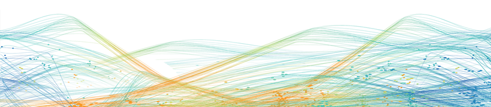
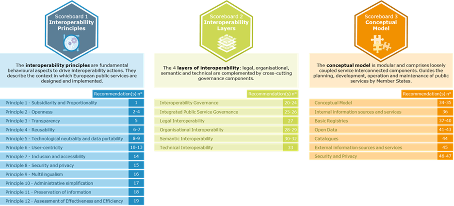
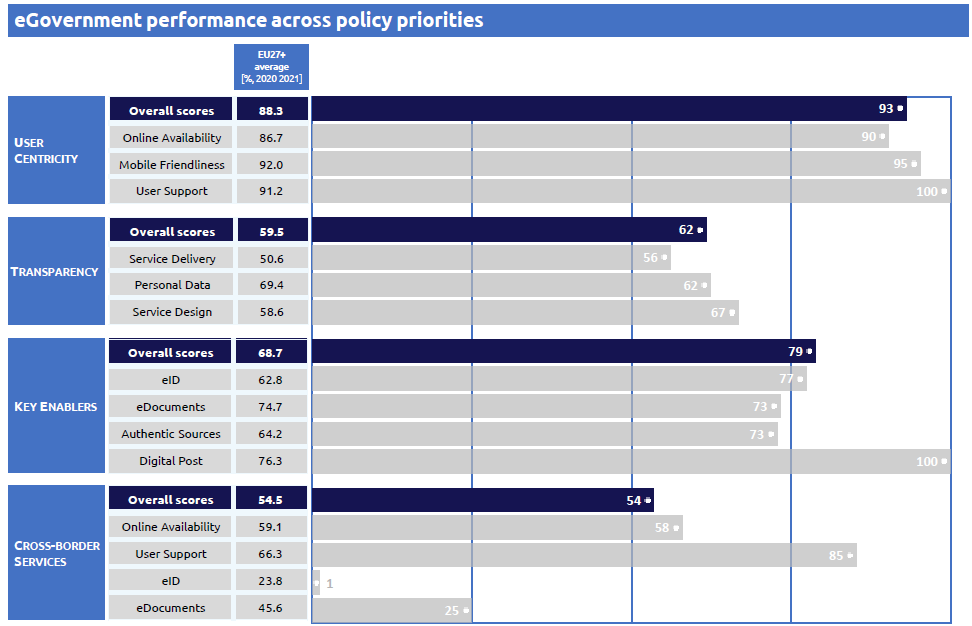
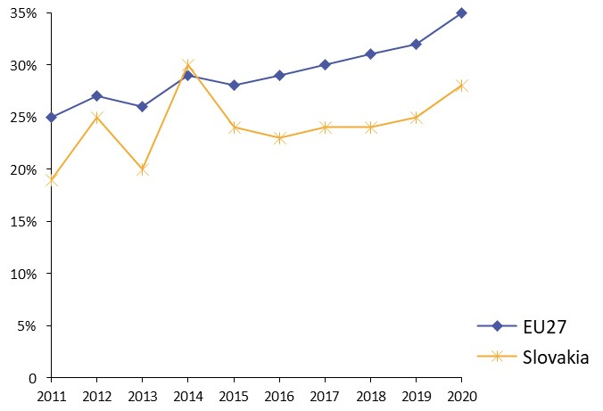

ISA2
Digital Public Administration factsheet 2022
Türkiye



2 Digital Public Administration Highlights 10
3 Digital Public Administration Political Communications 13
4 Digital Public Administration Legislation 24
5 Digital Public Administration Governance 36
6 Digital Public Administration Infrastructure 40
7 Cross-border Digital Public Administration Services for Citizens and Businesses 63

Country
Profile
1
The following graphs present data for the latest Digital Public Administration Indicators for Türkiye compared to the EU average. Statistical indicators in this section reflect those of Eurostat at the time the Edition is being prepared.
Percentage of individuals using the internet for interacting with public authorities in Türkiye | Percentage of individuals using the internet for obtaining information from public authorities in Türkiye |
Percentage of individuals using the internet for downloading official forms from public authorities in Türkiye | Percentage of individuals using the internet for submitting completed forms to public authorities in Türkiye |
In 2017, the European Commission published the European Interoperability Framework (EIF) to give specific guidance on how to set up interoperable digital public services through a set of 47 recommendations. The picture below represents the three pillars of the EIF around which the EIF Monitoring Mechanism was built to evaluate the level of implementation of the EIF within the Member States. It is based on a set of 71 Key Performance Indicators (KPIs) clustered within the three main pillars of the EIF (Principles, Layers and Conceptual model), outlined below.

Source: European Interoperability Framework Monitoring Mechanism 2021
For each of the three pillars, a different scoreboard was created to breakdown the results into their main components (i.e. the 12 principles of interoperability, the interoperability layers and the components of the conceptual model). The thematic areas are evaluated on a scale from one to four, where one means a lower level of implementation and 4 means a higher level of implementation. The graphs below show the result of the second EIF Monitoring Mechanism data collection exercise for Türkiye in 2021.
Source: European Interoperability Framework Monitoring Mechanism 2021
Türkiye’s results in Scoreboard 1 show an overall good implementation of the EIF principles, despite the lack of data for the Principle 4 (Reusability) and with Principle 12 (Assessment of Effectiveness and Efficiency) achieving a score of 4 which is above the European average. All principles met the European average, with the exception of Principle 9 (Multilingualism) which indicates an area of improvement for Turkish public administrations that could make better use of information systems and technical architectures that cater for multilingualism when establishing a European public service (Recommendation 16).
Source: European Interoperability Framework Monitoring Mechanism 2021
The Turkish results for the implementation of interoperability layers assessed for Scoreboard 2 show a very good performance with maximal scores of 4 for every interoperability layer. A possible area of improvement concerns interoperability; governance, Turkish public administrations could better consult relevant catalogues of standards, specifications and guidelines at national and EU level, in accordance with your NIF and relevant DIFs, when procuring and developing ICT solutions (Recommendation 23).
Source: European Interoperability Framework Monitoring Mechanism 2021
Türkiye’s scores assessing the Conceptual Model in Scoreboard 3 show a good performance in the implementation of all recommendations, despite the lack of data in the areas related to open data and security and privacy. In line with the European average, Türkiye gets the maximal score of 4 for base registries and internal and external information sources and services. Possible areas of improvement are the layers related to catalogues and the conceptual model itself where a score of 3 was achieved. More specifically, Türkiye should further enhance the way in which it puts in place catalogues of public services, public data, and interoperability solutions and uses common models for describing them (Catalogues – Recommendation 44) as well as better decide on a common scheme for interconnecting loosely coupled service components and put in place and maintain the necessary infrastructure for establishing and maintaining European public services (Conceptual Model – Recommendation 35).
Additional information on Türkiye’s results on the EIF Monitoring Mechanism is available online through interactive dashboards.
The graph below presents the main highlights of the latest eGovernment Benchmark Report, an assessment of eGovernment services in 36 countries: the 27 European Union Member States, as well as Iceland, Norway, Montenegro, the Republic of Serbia, Switzerland, Türkiye, Albania and Macedonia (referred to as the EU27+).
The study evaluates online public services on four dimensions:
The 2022 report presents the biennial results, achieved over the past two years of measurement of all nine life events used to measure the above-mentioned key dimensions. More specifically, these life events are divided between seven ‘Citizen life events’ (Starting a small claim procedure, Moving, Owning a car, Health measured in 2021, and Career, Studying, Family life, measured in 2020) and two ‘Business life events’ (Regular Business Operations, measured in 2021, and Business start-up, measured in 2020).

Source: eGovernment Benchmark Report 2022 Country Factsheets
Digital Public Administration Highlights
2
| Digital Public Administration Political Communications |
The legislation regarding Circular on the Use of Open Source Code in Public, which is under preparation, aims to expand the use of the open source software model, which allows its users to examine, audit, develop and republish, in the public sector and to increase information sharing and cooperation. In this direction, a guideline study is also being carried out, which includes instructions for public institutions to replace their commercially licensed software with their open source counterparts. The work started in 2021 and is planned to be completed in 2022.
In order to meet the information technology infrastructure (IT) needs of public institutions more effectively and to increase the quality of public services, the Public Cloud Computing Strategy and Action Plan is planned to be ready by the end of 2022. The strategy and action plan prepared for public institutions to make the most of all the advantages of cloud technologies includes the following outputs:
The Public Cloud Computing Strategy and Action Plan is planned to be completed in 2022.
| Digital Public Administration Legislation |
Following the introduction of the By-Law on the Procedures and Principles Pertaining to the Implementation of the Electronic Signature Law, six Electronic Certificate Service Providers were authorised as of December 2021. The Public Certificate Centre is the body responsible for providing electronic certificate services to all public institutions.
On 1 May 2021, the Regulation Amending the Regulation on the Prevention of Laundering Proceeds of Crime and the Financing of Terrorism (“Regulation”) entered into force. With the said amendment, it has been determined that "crypto asset service providers" are liable under the "Regulation on Measures Regarding the Prevention of Laundering Proceeds of Crime and Financing of Terrorism".
Digital Public Administration Governance |
The Digital Transformation Office (DTO) of Presidency of the Republic of Türkiye handles the supervision of auditing and monitoring of the compliance of information and communication security activities belonging to public institutions and enterprises providing critical infrastructure services. For this purpose, the Information and Communication Security Audit Guide was published in 2021. It is expected that audit and surveillance activities will be carried out by the internal audit units of institutions and organizations in accordance with the Information and Communication Security Audit Guide.
Digital Public Administration Infrastructure |
The eGovernment Gateway provides an infrastructure for electronic payment transactions. Payment is made to public institutions via credit card. Up to now, 79 municipalities were integrated into the ePayment infrastructure of the eGovernment Gateway. Private ePayment organisations have been operating under the supervision of the Central Bank of the Republic of Türkiye (TCMB). Most of the payments collected by the State in 2022 are planned to be made through the eGovernment Gateway. In this context, it is aimed to start the pilot implementation in 2022 and to make collections entirely through the e-Government Gateway in 2023.
Digital Public Administration Political Communications
3
Eleventh Development Plan (2019–2023)
On 18 July 2019, the Eleventh Development Plan (2019–2023) was approved by the Grand National Assembly of Türkiye. Being the first Development Plan prepared after the adoption of the new Presidential Government System, the plan was shaped with a long-term perspective to constitute the main roadmap for improving the international position of the country and the welfare of the society.
Designed as the first five-year part of a fifteen-year perspective, the Development Plan envisages an overall change and breakthrough in all fields, and a resolute and uninterrupted implementation in the long-term perspective.
As a holistic and multi-dimensional national policy document, it focuses on facilitating competitiveness and efficiency increase in all fields and is composed of five fundamental pillars: (i) stable and strong economy; (ii) competitive production and high productivity; (iii) qualified human capital and strong society; (iv) liveable and smart cities and sustainable environment; and (v) rule of law, democratisation and good governance.
This development plan is aimed to rationalize the control, permission and approval processes implemented by various institutions while reducing bureaucracy through digitalisation. Cross-cutting technological aspects such as industrial cloud platforms, blockchain infrastructures, data infrastructures, sensor technologies, internet of things (IoT), artificial intelligence (AI), augmented reality and energy storage needed in line with the priority sectors and development areas are determined according to global trends. In addition, the digital transformation and technological development plan for the labour market includes measures aimed at transforming the workforce through digital skills, as well as the measures providing decent job opportunities for all segments of the society.
Moreover, the Eleventh Development Plan aims to transfer public services to the electronic environment through modernisation actions and process improvements that will ensure effectiveness and interoperability with a user-oriented perspective and increase service delivery and usage through the Digital Türkiye (eGovernment Gateway) which is coordinated and implemented by Digital Transformation Office (DTO) of the Presidency of the Republic of Türkiye. The plan aims to achieve a 95% satisfaction rate for eGovernment services by 2023, while raising the uptake of electronic services to 70% with further services integrated in the eGovernment Gateway. In line with this goal, a satisfaction survey was conducted between December 2021 and February 2022 with the participation of 1 million users on the e-Government Gateway, the results of which is currently being analysed.
2023 Industry and Technology Strategy
In 2019, the Ministry of Industry and Technology published the 2023 Industry and Technology Strategy, whose aim is to carry out a comprehensive programme in the fields of industry and technology through a holistic approach. The strategy consists of five main pillars: high technology and innovation; digital transformation and industry; entrepreneurship; human capital; and infrastructure. The strategy paper is consistent with the Türkiye 2023 goals in the framework of the Eleventh Development Plan.
Digital Türkiye and Mitigation of Bureaucracy Meetings
As required by the interoperability principle, the highest level of participation is ensured in efforts to reduce bureaucracy through eGovernment actions, and the work is carried out with periodic meetings held under the coordination of the Digital Transformation Office (DTO) and the chairmanship of the Vice President.
In order to make governance more effective, departments in the nature of public institutions and the necessary organisations from the business world are also invited to those meetings as well as the ministries and relevant public institutions. During the meetings, decisions are made regarding the services which will be transferred to the eGovernment Gateway, data sharing between institutions, and simplification of service processes. More in detail, with the “Digital Türkiye and Mitigation of Bureaucracy” meetings, it was decided that all public institutions will digitise their services on the basis of the “zero documents” principle. The twelfth meeting was held in March 2021.
In line with the “Digital Türkiye and Mitigation of Bureaucracy” vision, DTO launched the integrated service provision within the Digital Türkiye platform. In this respect, human-centred integrated services such as “My Vehicles”, “My Residence” and “My Working Life” are meant to facilitate the lives of Turkish citizens from birth to death or with an end-to-end undertanding.
Circular on the Use of Open-Source Code in Public
The legislation regarding the Circular on the Use of Open-Source Code in Public, which is under preparation, aims to expand the use of the open source software model. This model allows users to examine, audit, develop and republish in the public sector space and to increase information sharing and cooperation. Thus, more powerful and advanced software is planned in order to foster independent digitalisation. In this respect, a guideline study is also being carried out, which includes instructions for public institutions to replace their commercially-licensed software with their open source counterparts. The work started in 2021 and is planned to be completed in 2022.
Presidential Annual Programme 2022
The main objective of the Presidential Annual Programme 2022 is to transfer public services to the electronic environment through modernisation and process improvements that will ensure efficiency and interoperability with a user-oriented perspective, as well as to increase the provision and use of services through the eGovernment Gateway. In this regard, the priority areas of action in the relevant programme were determined as follows:
Eleventh Development Plan (2019-2023)
Under the Information and Communication Technologies heading of the Eleventh Development Plan, there is the measure "The regulations regarding trust services (e-seal, SSL certificates, e-signature, registered e-mail) will be updated in order to comply with the EU's Electronic Identification and Trust Services Regulation".
Presidential Annual Programme 2021 & 2022
Following the Eleventh Development Plan, in the Presidential Annual Plan for 2021 & 2022, it is determined that "After the updates in the Electronic Signature Law No. 5070, which has reached the final stage within the scope of eIDAS harmonization studies, the regulations regarding e-signature will be updated in order to load e-signatures on identity cards, and secondary regulations regarding e-seal and SSL certificates will be prepared."
National Cybersecurity Strategy and Action Plan
The Ministry of Transport and Infrastructure is the responsible body for making policies and developing national cyber security strategy and action plans in Türkiye. The National Cybersecurity Strategy and Action Plan for the period 2020-2023 entered into force in 2020. In line with the Türkiye 2023 goals, it will determine the goals, strategies and actions for the upcoming period, aiming to further the gains achieved in the strategies implemented before.
In the development of the strategy, the effects of technological developments, trends in cyberthreats, national needs and international practices were carefully examined and targets were set accordingly. The continuous actions carried out in the 2013-2014 and 2016-2019 periods were reviewed within the context of the current situation and the planned studies. Subsequently, the necessary improvements were made. Within this framework, the strategic goals that were set are gathered under eight main headings:
Based on the principle of interoperability, the Information and Communication Security Guide was published by the Digital Transformation Office (DTO) of the Presidency for all public institutions and organisations, and enterprises providing critical infrastructure services. The guide was prepared on the basis of Presidential Circular No. 2019/12, as a complementary document regarding the security level of information assets according to institutions and the kind of measures to be taken.
Moreover, a project has been initiated by DTO in order to examine the cybersecurity governance model in Türkiye, to analyse world examples, make a comparative analysis and as a result, to present improvement suggestions. Necessary legal, administrative and technical regulations will be put forward for the improvement of the determined areas based on the study on determining Türkiye's cybersecurity governance model and roadmap.
CSIRT Setup and Management Guide
The Communiqué on the Procedures and Principles Regarding the Establishment, Duties, and Activities of Cyber Security Incident Response Teams number 28818 of 11 November 2013 was published in the Official Gazette regarding the decision to establish Cyber Security Incident Response Teams (Institutional CSIRTs and Sectoral CSIRTs) under the framework of National Cyber Security Strategy and Action Plan 2013-2014.
The tasks, which are establishing Sectoral CSIRTs and Institutional CSIRTs within the Ministry, ensuring the necessary coordination, and establishing an audit mechanism, have been assigned to the General Directorate of Communications on behalf of the Ministry by consent of the Ministry for Establishment of CSIRT under 67523305-719-E.509 of 31.01.2016 . Therefore, the Institutional CSIRT Setup and Management Guide were prepared and published as an annex of the Information Security Policies Directive. The guide includes the qualifications of the Institutional CSIRT personnel and the training that needed to be taken, the applied procedures both before and after a cyber incident, and the established principles of the Institutional CSIRT.
Information and Communication Security Guide
Following the Presidential Circular on Information Security Measures 2019/12, the drafting of the Information and Communication Security Guide was initiated under the coordination of the Digital Transformation Office. In this context, during almost one year of work, a 5-day workshop was organised. Contributions of 240 experts from 51 institutions and organisations as well as 16 ministries were received, and 2 660 opinions and recommendations were evaluated. The guide was then approved and published on 24 July 2020.
The Information and Communication Security Guide identifies different levels of security requirements that must be implemented in the IT systems of public institutions and organisations operating critical infrastructures, in accordance with national and international information security standards. IT security represents one of the most important objectives for public institutions, companies providing critical public services and individuals. Being the first national reference document in this area, the guide provides guidance to public institutions to secure their IT infrastructure providing critical public services. It covers all aspects of information security, from network to Internet of Things (IoT) security, and also includes measures to be taken in specific critical sectors, like eCommunication. The guide will be a live document which will be regularly updated in accordance with the emerging security needs, developing technologies and the National Cybersecurity Strategy and Action Plans.
Information and Communication Security Audit Guide
In order to achieve and ensure the continuity of the achievements targeted in the Information and Communication Security Guide, the Information and Communication Security Audit Guide was prepared by the DTO and published in October 2021, in the belief that information and communication security is possible through effective audit and surveillance activities.
Public institutions and organisations and businesses providing critical infrastructure services are expected to complete their compliance activities within the period specified in the Information and Communication Security Guide, and to carry out audit studies at least once a year in order to determine the compliance of the activities carried out and the measures taken.
Electronic Public Information Management System
The Electronic Public Information Management System (KAYSİS), run by the Digital Transformation Office of the Presidency, is one of the basic information systems used in the digital definition of the basic elements of public administration. This framework system consists of subsystems that are linked to each other in a relational network. The two most important are the State Organisation Central Registration System (DETSIS) and the Service Inventory Management System (HEYS): the organisational structures of public institutions and organisations are digitally identified through the State Organisation Central Registration System, while public services are defined electronically through the Service Inventory Management System. The services ought to be transferred to the eGovernment Platform and the relevant processes associated with their respective legislative references.
Presidential Annual Programme 2021
Following the Presidential Annual Programme 2021, the Turkish government aims to introduce eProcurement in all types of purchasing procedure. That way, the programme intends to increase the efficiency of public procurement processes with a view to improving the implementation of services and increasing competition.
The following activities are listed in the Presidential Annual Programme 2021 in the field of eProcurement:
2020-2023 National Smart Cities Strategy and Action Plan
The 2020-2023 National Smart Cities Strategy and Action Plan, which is built with the common mind of ecosystem stakeholders, takes into account national needs and priorities holistically have been prepared in order to gain the ability to work together by bringing a holistic view to smart city policies at the national level in our country, to prioritize investments in line with the determined policies, to ensure that the investments are implemented with the right projects and activities. In addition, it was published in the Official Gazette dated 24 December 2019 and numbered 30988 and entered into force with the 2020-2023 National Smart Cities Strategy and Action Plan Circular No. 2019/29.
In line with this; The “Smart Cities Capacity Building and Guidance Project” was implemented by Ministry of Transport and Infrastructure in order to contribute to the realization of the actions, duties and responsibilities defined within the scope of the 2020-2023 National Smart Cities Strategy and Action Plan on a national scale and to increase the capacity of all stakeholders, especially our local governments.
2020-2023 National Intelligent Transportation Systems Strategy Document and Action Plan
Under the 2020-2023 National Intelligent Transportation Systems Strategy Document and Action Plan, a total of 31 actions have been set to achieve five strategic goals, including sustainable smart mobility, ensuring road and driving safety, creating a livable environment, conscious society and data sharing. Incentive mechanisms will be established for the development of national technologies on smart transportation systems. Studies on autonomous systems, robotics, big data, artificial intelligence, and new generation communication technologies will be included in supporting programs.
National Artificial Intelligence Strategy
The National Artificial Intelligence Strategy 2021-2025 has entered into force. Presidential Circular No. 2021/18 on the National Artificial Intelligence Strategy 2021-2025, was drafted in cooperation with the Digital Transformation Office of the Presidency of the Republic of Türkiye and the Ministry of Industry and Technology, and with the active participation of all relevant stakeholders.
The NAIS was prepared under the Eleventh Development Plan and Presidential Annual Programs, in line with the Digital Türkiye vision and the National Technology Initiative.
Having the vision of “creating value on a global scale with an agile and sustainable AI ecosystem for a prosperous Türkiye”, the National AI Strategy draws up the Turkish roadmap in the field of AI technologies and includes the steps to be taken in critical technological areas. It presents the measures that will place works in the field to be carried out nationally on common ground and the governance mechanism determined to implement these measures. Over time, the measures will adapt to uncertainties by evaluating Türkiye’s changing strengths and weaknesses, opportunities and threats dynamically.
Within the National AI Strategy and initiatives in the field, Türkiye identified six pillars transforming the society and the economy around human, data and platform conditions. In this context, Türkiye needs to have high‑quality data respecting ethical principles. Hence, the initial focus is to enable trustworthy data access nationwide, then expanding to international cooperation. To that end, the OECD AI Recommendations, the European Council and Commissions’ efforts on AI ethics, the work of existing bodies active in the field, e.g. the European Commission Ad Hoc Committee on Artificial Intelligence (CAHAI), and the efforts of UNESCO on AI ethics and principles are highly acknowledged in the draft strategy.
The draft AI strategy sets the measures that will be implemented between 2021 and 2025. The strategy’s basic approach is to create an AI ecosystem that tries, discovers, learns and constantly updates itself. Aligned with the Eleventh Development Plan and the Decrees of the Science, Technology and Innovation Policies Board, the 6 priorities around which the strategy is designed are the following:
Within the scope of these strategic priorities, 24 objectives and 119 measures were determined.
The implementation process of the strategy will be coordinated by the Steering Committee, which will be chaired by the Vice President. The governance mechanism includes the AI Ecosystem Advisory Group as well as the working groups, where all relevant stakeholders will be represented.
The action plans, which detail the implementation of the strategy, will be prepared by the relevant Ministries under the coordination of the Steering Committee.
Eleventh Development Plan (2019-2023)
In the Eleventh Development Plan of the Republic of Türkiye (2019-2023), high-level strategic measures regarding distributed ledger technologies are addressed as follows:
2023 Industry and Technology Strategy
Blockchain was included as a special item namely "National Blockchain Infrastructure" discussed as a special section under the title of "Infrastructure"within the framework of the 2023 Industry and Technology Strategy. Under the special item, the importance of blockchain technology was emphasized first, and then the relevant targets were shared;
Eleventh Development Plan (2019-2023)
Big data applications play a crucial role in improving the decision making and implementing capacities of the public administration. The data created through mobile applications and social media, in addition to the data produced by the government, allow to identify and solve potential problems concerning public services such as health, traffic and public order. Being aware of this fact, in the Eleventh Development Plan of the Republic of Türkiye (2019-2023), high-level strategic measures regarding big data are addressed as follows;
Public Cloud Computing Strategy and Action Plan
In order to meet the information technology infrastructure (IT) needs of public institutions more effectively and to increase the quality of public services, the Public Cloud Computing Strategy and Action Plan has been under development since 2021. The strategy and action plan prepared for public institutions to make the most of all the advantages of cloud technologies includes the following outputs:
The Public Cloud Computing Strategy and Action Plan is planned to be completed in 2022.
Eleventh Development Plan (2019-2023)
In the Eleventh Development Plan of the Republic of Türkiye (2019-2023), high-level strategic measures regarding IoT are addressed as follows;
2020 – 2023 National Intelligent Transportation Systems (ITS) Strategy and Action Plan
In the 2020-2023 National Intelligent Transportation Systems (ITS) Strategy and Action Plan, it is aimed to “Establish an IoT network incorporating ITS components to store the data collected from these components within big data environment and convert it into analyzable data and, optimize the transportation infrastructure using innovative technologies in artificial intelligence, deep learning, communication and similar fields”.
National Artificial Intelligence Strategy
In the National Artificial Intelligence Strategy 2021-2025, it is determined that testing and implementation processes of AI products and services will be improved through high performance computing infrastructures that are in operation and those that will be newly established for data storage, rapid transmission, and secure sharing. According to the strategy; with the objective of “shared access opportunities will be provided to researchers and initiatives that need high performance computing infrastructures in AI studies”, 3 measures are identified as follows:
The eventual goal is to ensure that the number of public institutions and enterprises providing access to common high performance computing infrastructures will be at least
200.
5GTR Forum
The New Generation Mobile Communication Technologies Türkiye Forum (5GTR Forum) was set up jointly by the Ministry of Transport and Infrastructure and Information and the Communication Technologies Authority (BTK) in 2016. Within the scope of the 5GTR Forum, core network, physical network, service and application and standardisation working groups have been established under the coordination of the BTK.
The White Paper outlining the priorities, strategy and road maps of Türkiye for 5G and beyond has been prepared by the 5GTR Forum working groups. The White Paper was launched on 24 July 2018 and published on the website of the BTK. The White Paper aims to serve as a strategy and road map guide for 5G and beyond, in line with Türkiye's goal of becoming one of the countries producing these technologies.
The BTK also prepared and published a 5G and Vertical Sectors Report to raise awareness about the effects of 5G on vertical sectors on 14 January 2018. In addition, various studies have been carried out in different fields, and events such as the Automotive Sector Workshop on the Road to 5G have been organised.
Mobile Broadband Spectrum Strategy
Mobile broadband services need wider spectrum blocks depending on the high adoption and increase the use of these services as well as with new technological advancements such as 5G bring new requirements regarding the spectrum. Taking into account these factors, the public announcement of the spectrum identified for mobile broadband services with release dates enables operators to make their plans effectively and this plan the cost of installation of more base stations due to the lack of spectrum and the increase in data usages. The Mobile Broadband Spectrum Strategy has been presented to identify the roadmap which is necessary to achieve our mobile broadband services country targets (such as increasing minimum downlink rates per user to EU levels, decreasing the customers’ fees for accessing these services, the release of new technologies). The strategy is planned to be released later in 2022.

Digital Public Administration Legislation
4
eGovernment Legislation
Presidential Decree No. 1 gave the Digital Transformation Office the responsibility of coordinating the digital transformation of the public sector.
On 24 October 2019, following Presidential Decree No. 48, the eGovernment tasks performed by the Ministry of Transport and Infrastructure of the Republic of Türkiye were assigned to the Digital Transformation Office. The decree also introduced the position of Government Chief Digital Officer and assigned this role to the President of the Digital Transformation Office. As a result, the Digital Transformation Office now coordinates all activities related to eGovernment, digital government, cybersecurity, critical infrastructures, big data and AI.
On 26 March 2020, Presidential Decree No. 2303 relieved the Ministry of Transport also from the duty of establishing, operating and managing the eGovernment Gateway. Consequently, all tasks related to the eGovernment Gateway were entrusted to the Digital Transformation Office.
On 11 October 2018, Presidential Circular No. 2018/13 was published in the Official Gazette. According to this circular, all public services, including those provided electronically, should be provided in line with the Once-Only principle, meaning that all applications by citizens shall be completed expeditiously at the point of application.
The regulations prepared regarding the services provided by the departments of the Ministry of Culture and Tourism contain articles regarding what service can be provided and how through the eGovernment system. However, no separate regulations exist for services carried out through eGovernment.
The legislative work of the Draft Presidential Decree on the Delivery, Monitoring and Evaluation of Public Services prepared by the Digital Transformation Office (DTO) is ongoing. The purpose of the said legislation is to perform public services in a fast, easily accessible, satisfaction-based, impartial, transparent way, within objective criteria and in low-cost manner; to carry out the processes of receiving, finalising, monitoring and evaluating applications in the delivery of public services in a digital environment at the maximum level; and to regulate the procedures and principles of information, document and data sharing between administrations. The draft Presidential Decree, which is still in the phase of being enacted, covers the procedures and principles regarding the public services provided by the administrations in the physical or digital environment and information, document and data sharing between the administrations.
Interoperability Principles in Public Information Systems
Circular No. 2009/4 on Interoperability Principles in Public Information Systems has been in force since 2009.
Freedom of Information Legislation
The Right to Information Act (Law No. 4982) went into effect in April 2004. The act was then supplemented by a circular issued by the Prime Ministry titled ‘The Exercise of the Right of Petition and Access to Information’.
The act granted citizens and legal entities the right to information from public institutions and private organisations that qualify as public institutions. Following the enforcement of the act in April 2004, all public institutions established Right to Information Units and started to accept information requests, including those made through the internet. In November 2005, the Right to Information Act was amended to enable citizens to dispute all decisions by State agencies regarding denials of requests for information.
Re-use of Public Sector Information
The re-use of Public Sector Information (PSI) is partly covered by the Right to Information Act (Law No. 4982). In addition, the 2016–2019 National eGovernment Strategy and Action Plan also provided for actions regarding the re-use and sharing of PSI, such as the reformation of public sector information, and the establishment of the Open Data and Sharing Portal and the Public Expenditure and Monitoring Portal.
Regulation on the Turkish National Electronic Identity Card
The regulation regarding the electronic identity (eID) card has been finalised. Electronic Identity Card Authentication System Regulation, published in the Official Gazette on 22 October 2020 with number 31282, regulates the procedures and principles of the ID Authentication System (eID Verification System or EVS). Pursuant to the regulation, the service provider certification applications in the field of eID cards shall be made to the General Directorate of Population and Citizenship Affairs. The applications shall be finalised by the system’s Evaluation Commission and submitted to the Ministry of Interior for approval. Waiting for the approval, the ID Authentication Service Providers (ASP) shall commence providing their services.
The regulation also focuses on the provisions regarding the processing, protection and security of personal data. Some of these provisions can be summarised as follows:
Other procedures and principles regarding security relating to the system shall be determined by the General Directorate of Population and Citizenship Affairs.
By-Law on the Procedures and Principles Pertaining to the Implementation of the Electronic Signature Law
Following the introduction of the By-Law on the Procedures and Principles Pertaining to the Implementation of the Electronic Signature Law, six Electronic Certificate Service Providers were authorised as of December 2021. The Public Certificate Centre is the body responsible for providing electronic certificate services to all public institutions.
Law No. 6661, Amending the Law on Military Service and Other Laws
Articles 8 and 12 of Law No. 6661 allow for biometric data to be embedded into the new eID cards and those cards to be used for authentication purposes. Digital signature‑ready eID cards also started to be distributed in 2017.
Law No. 5070 on Electronic Signature
The Law on Electronic Signatures was enacted in 2004. The purpose of this law was to define the principles applying to the legal and technical aspects, and the application of electronic signatures. The law covers the legal status of electronic signatures, the operations concerning electronic signatures and the activities of electronic certificate service providers. The law ensures that qualified electronic signatures, produced according to the identified procedures, have the same legal effect as handwritten signatures. The total number of qualified electronic certificates produced from 2004 to December 2021 reached 6.2 million. 2 million of them are in active use.
Regulation on Electronic Seals
The Regulation on eSeals is contained in Law No.5070 on Electronic Signatures, published in the Official Gazette of 28 January 2021, and entered into force on 3 February 2021. The eSeal, which can be defined as a kind of eSignature that verifies the corporate identity of the legal person, aims to guarantee that the legal person’s transactions in the electronic environment are made in a secure and verifiable manner. In addition, the eSeal ensures that the corporate identities are legally proven in electronic transactions.
Law No. 5809 on Electronic Communications
Law No. 5809 on Electronic Communications sets out the tasks and responsibilities of Ministry of Transport and Infrastructure regarding the determination of policy, strategy, objectives and action plan to ensure national cyber security; the rules and procedures on ensuring cyber security for public institutions and real and legal persons; the critical infrastructures and their relevant institutions and positions; establishing and overseeing the required response centre;conducting studies to produce and develop any kind of cyber response tools and national solutions or outsource or promote such efforts; conducting studies on cyber security awareness and trainings; and preparing the rules and procedures for real and legal persons operating in the field of cyber security.
Besides, Article 60, par. 10 of Law No. 5809/2008, gives the Information and Communication Technologies Authority (BTK) the power to take the necessary measures to fight against cyberattacks with the aim of ensuring national cybersecurity. Also, according to Article 60, par. 11 of the same law, the BTK has the right to ask any kind of information, document, record and data from any legal private and public entity, and real person. In addition, according to the same paragraph, the BTK has the power to enforce and impose sanctions (resulting in a monetary penalty between EUR 155 and EUR 1 550) on these entities in case they do not take the necessary measures to fight against cyberattacks.
Finally, Article 51 of Law No. 5809/2008 regulates the protection of privacy and the processing of personal data in the electronic communications sector and stipulates the conditions under which cross-border flow of traffic and data related to location is allowed.
Regulation Regarding Electronic Notification
The Regulation Regarding Electronic Notification was published in the Official Gazette on 6 December 2018. The main purpose of the regulation is to set out the procedures and principles regarding the notifications to be made in the electronic environment. The regulation outlines how to better implement electronic notification. The electronic notification system is one of the significant tools to enhance quality by providing more expeditious service to the parties. Besides, system data are regularly updated and shared with the public on the website of the Ministry of Justice.
Presidential Circular on Information Security Measures 2019/12
The transfer of information to digital environments, the direct access to information, the digitisation of infrastructures and the widespread use of information management systems bring serious security risks. In this context, the Presidential Circular on Information Security Measures 2019/12 was issued to reduce the security risks encountered and to ensure the security of critical types of data that may threaten national security or lead to the deterioration of the public order.
To guarantee data protection, the Presidential Circular aims to ensure that data owned by a country remains within the boundaries of that country. Additionally, it highlights that the production and use of national cybersecurity solutions represents one of Türkiye’s main priorities. Finally, it also states that “an Information and Communication Security Guide shall be prepared under the coordination of the Digital Transformation Office in order to mitigate and neutralize security risks and especially ensure the security of critical data”.
Draft Regulation on Ensuring Information and Communication Security
The Draft Regulation, the preparation stages of which were tasked to the DTO, is meant to implement information and communication security measures in order to reduce or eliminate information security risks in public institutions and organisations, while determining technical standards for the establishment, operation, audit, certification and surveillance of the information security management system. Moreover, it is conceived to determine the procedures and the relevant principles. With the regulation, public institutions and organisations registered in the State Organization Central Registration System (DETSIS) that have an information processing unit or provide information processing services within the framework of contracts will be regulated.
Personal Data Protection Law
The Personal Data Protection Law was published in the Official Gazette on 7 April 2016, No. 29677. This law regulates the conditions for processing and transferring personal data, sets the rights of the data subject as well as the obligations of the data controller and the data processor, and provides for the establishment of the Personal Data Protection Authority.
Directive on Health Information Security Policies
The Directive on Health Information Security Policies includes measures to (i) ensure information security in the processing of information in the Ministry; (ii) guarantee the information is evaluated within the scope of confidentiality, integrity and accessibility and is protected from all intentional or accidental threats from inside or outside; and (iii) determine the procedures and principles to be followed in terms of information security in the effective, correct, fast and secure realisation of the activities carried out.
By-Law on Network and Information Security in the Electronic Communications Sector
The By-Law on Network and Information Security in the Electronic Communications Sector was adopted on 13 July 2014 and identifies the obligations of operators with respect to network and information security in the electronic communications sector. In particular, the by-Law provides for the principles and basis for the measures to be taken to eliminate the risks stemming from threats and vulnerabilities with the aim of guaranteeing data, hardware-software and personnel security. Finally, the by-Law explicitly states that personal information processing and privacy protection are not under its scope.
By-Law on the Processing of Personal Data and Protection of Privacy in the Electronic Communications Sector
The Electronic Communications Law No. 5809 sets out the basic principles and procedures in order to ensure the protection of privacy and personal data in the electronic communications sector. In order to clarify the issues related to the implementation of the provisions of Law No. 5809 and identify secondary issues, the By-Law on the Processing of Personal Data and Protection of Privacy in the Electronic Communications Sector was prepared, taking into account the EU ePrivacy Directive (2002/58/EC). Published on 4 December 2020 in the Official Gazette, it entered into force on 4 June 2021.
Adaptation of Information Security and Cyber Security Standards
With the Turkish Standards Institute (TSE), efforts were made to adapt, develop and translate information security and cyber security standards into Turkish within the framework of critical infrastructure sectors. Within the scope of the study, the adaptation of 9 standards regarding different critical sectors such as ISO/IEC 27011, ISO/IEC 27799, ISO/IEC 27019, ISO/IEC 27017, ISO/IEC 27018, ISO/IEC 31000, ISO/IEC 27031, ISO/IEC 62443 and ISO/IEC27701 has been completed. Studies are being designed to bring these standards into national legislation in the upcoming period.
By-Law on the Procedures for the Provision of Public Services
In the context of the Once-Only principle implementation, the Presidency is reviewing the By-Law on the Procedures for the Provision of Public Services, so that no document is required by a public institution if the data is already provided by another public institution.
Along these lines, the Digital Transformation Office coordinated the amendment of 42 by-laws and 13 communications, which was subsequently published in the Official Gazette on 8 July 2019. The revision led to the streamlining of 111 processes with the objective of reducing the time spent on bureaucratic procedures both by citizens and the public sector. Furthermore, a wide range of applications in a variety of fields, such as jobs, scholarships, permits, licenses and certificates, can now be made through Digital Türkiye (eGovernment). While the average number of documents required per service was 3.80 before the transition from eGovernment to Digital Türkiye, this number is now down to 0.34.
Regulation regarding the Data Sharing of the Land Registry and Cadastre
The Regulation regarding the Data Sharing of the Land Registry and Cadastre was published in the Official Gazette on 1 November 2018. The purpose of the regulation is to set forth the rules and procedures regarding the sharing of the data generated or archived by the General Directorate of Land Registry and Cadastre with individuals and entities digitally or in hard copy and the land registry transactions and procedures to be carried out online.
In this context, systems of many institutions have been integrated with TAKBIS (Land Registry and Cadastre Information System) to exchange data. The systems include MERSIS (Central Registration System), MERNİS (Central Civil Registration System), GÖÇNET (Immigration Registration System), MAKS (Spatial Address Registration System), and the online systems of the Notaries Union, Ministry of Justice, Ministry of Agriculture, Revenue Administration and Banks.
Regulation regarding the Principles of Implementation of the Integrated Public Financial Management Information System
The Regulation regarding the Principles of Implementation of the Integrated Public Financial Management Information System was published in the Official Gazette on 26 June 2018. The purpose of this regulation is to determine the procedures and principles regarding the obligations of the authorised data storage organisation, the manner in which the information is reported to the data storage organisation and the tasks to be performed by this organisation.
By-Law on the Identity Registry System Sharing
The By-Law on the Identity Registry System Sharing was published on 8 December 2006, providing for the procedures for sharing the electronic information available in the Identity Registry with public organisations.
Regulation regarding the Change of Electronic Procurement Implementation
The Regulation regarding the Change of Electronic Procurement Implementation was published in the Official Gazette on 19 June 2018 and 16 March 2019. The purpose of the regulation is to regulate the procedures and principles regarding the realisation of the tenders within the scope of the Public Procurement Law on a partially or fully electronic platform.
With the amendments to the regulation and the communiqué, published in the Official Gazette on 26 January 2021 and 20 June 2021, performance bonds can also be arranged and submitted electronically. In addition, data regarding eObjection complaints and regarding the officials in the management of the candidates or tenderers and their partners, members and founders can now be recorded on the electronic public procurement platform (EKAP). eTender applications have been developed for the administrations to obtain these data from the EKAP.
Moreover, with the amendment to the regulation to be made in the future, electronic bidding will be made compulsory in 2022 within the scope of tenders of certain procedures and amounts, in order to promote eTendering.
Public Procurement Law No. 4734
Law No. 4734, published on 22 January 2002, enabled the implementation of electronic public procurement. Further amendments were introduced to the law in 2011 so as to regulate the procedures and principles for the conduct of tenders on the Electronic Public Procurement (EPP) Platform. The amended law defines some normative issues with regard to tenders, regulates the preparation for the tender process, and lays down the rules for the preparation, submission, opening and evaluation of eTenders.
With the amendment made to the Law in 2021, a regulation was made in order to make complaints and objections in the electronic environment and to provide ease of processing in applications.
Draft Regulation on Authorisation of Participants within the Scope of Public Informatics Tenders
The studies for enactment of the “Regulation on Authorisation of Participants within the Scope of Public Information Tenders”, prepared with the contribution of the Digital Transformation Office (DTO), the Ministry of Industry and Technology and the Public Procurement Authority, is continuing. The purpose of the said draft regulation is to determine the criteria to be met by the participants within the scope of informatics purchases to be made by public administrations, to authorise them in line with these criteria, to determine the procedures and principles regarding the suspension or cancellation of authorisations that do not comply with technical criteria.
Authorisation for the Implementation of Investment Incentive Certificate Transactions in the Electronic Environment
The Authorisation for the Implementation of Investment Incentive Certificate Transactions in the Electronic Environment was published in the Official Gazette on 31 May 2018.
Law regarding the Improvement of the Investment Environment
The Law regarding the Improvement of the Investment Environment was published in the Official Gazette on 15 February 2018, including several articles referring to the digitisation of public data and data exchange electronic platforms.
Regulation regarding Service Providers and Intermediary Service Providers in Electronic Commerce
The Regulation regarding Service Providers and Intermediary Service Providers in Electronic Commerce was published in the Official Gazette on August 26, 2015. The purpose of the regulation is to regulate the procedures and principles regarding the general information that service providers are obliged to keep on the network, the information they need to provide to the buyers and other related sufficient information about e-commerce platform.
Regulation regarding the Activities, Studies and Auditing Principles of the Data Storage Organisations
The Regulation regarding the Activities, Studies and Auditing Principles of the Data Storage Organisations was published in the Official Gazette on 19 September 2018. The purpose of this regulation is to determine the procedures and principles regarding the obligations of the authorised data storage organisation, the manner in which the information is to be reported to the data storage organisation, and the tasks to be performed by this organisation.
eCommerce Legislation
Law No. 6563 on eCommerce was published on 23 October 2014 and entered into force as of May 2015. The Law establishes the legal base for e-commerce activities and clarifies the definitions of eCommerce, commercial communication, service provider and intermediary service providers. The law regulates the principles and procedures regarding eCommerce, the liabilities of eCommerce service providers and intermediaries. Moreover, it includes provisions on the framework of commercial communication (such as prior consent -opt-in- and the right of refusal -unsubscribe mechanism- etc.) made by SMS, e-mail and phone calls. Besides that, the liabilities of service providers and intermediary services providers and sanctions to be applied in case of breach also has been covered by the law.
Law No. 7194 on the Amendment of Certain Laws Including Decree Law No. 375
Following Law No. 7194, dated 7 July 2019, a digital service tax was introduced on the income obtained from advertisements, and voice and visual digital contents presented by digital service providers on digital media, and the provision of digital media where users can communicate with each other. The subject of the digital service tax is the digital service provider.
Regulation on Personal Health Data
Article 378 of Presidential Decree No. 1 on the Presidential Organisation defines the procedures and practices to be followed by the central and provincial units of the Ministry of Health, and the health service providers operating in connection to that and their affiliated and related organisations within the scope of the provisions of the Personal Data Protection Law No. 6698. In addition, the Regulation on Personal Health Data entered into force after being published in the Official Gazette on 21 June 2019.
Involvement in International Legal Frameworks on AI
Türkiye has been taking part in the efforts to put together international legal frameworks addressing artificial intelligence. To this end, the Turkish delegation actively contributed to the “Possible elements of a legal framework on artificial intelligence, based on the Council of Europe’s standards on human rights, democracy and the rule of law” put together by the Council of Europe Ad Hoc Committee on Artificial Intelligence (CAHAI), which has been submitted to the Committee of Ministers for further consideration. The CAHAI has completed its mandate in December 2021. As the following step, the Committee on Artificial Intelligence (CAI) has been established to further discuss the Possible Elements document. Türkiye will be actively contributing to CAI meetings, just as it did for the CAHAI.
Moreover, the Turkish delegation is also contributing to the efforts of the Council of Europe to establish an instrument addressing criminal law issues pertaining to automated driving. As such, the European Committee on Crime Problems Drafting Committee on Artificial Intelligence and Criminal Law (CDPC-AICL) has recently begun its work to establish such an instrument, also taking into consideration the work of the CAHAI.
Legislation on Cryptocurrency
To date, Türkiye has adopted several regulations regarding cryptocurrencies:
Law on Cryptocurrency
A law on cryptocurrency is currently being considered by the Turkish government and will be sent to the national assembly “without delay”, as stated by President Erdoğan in December 2021. As of February 2022, the law has not yet been enacted.
Protection of Personal Data and Big Data Impact in Turkish Law
In Law No. 6698 on the Protection of Personal Data, personal data are protected within the scope of the right to privacy and the material and moral integrity of the person. As can be seen in paragraph 3 of Article 20 of the Constitution, regulations have been brought in accordance with the 1995 95/46/EC Data Protection Directive of the European Union. This supplement is as follows: “Everyone has the right to demand the protection of their personal data. This right also includes being informed about the personal data about the person, accessing these data, requesting their correction or deletion, and learning whether they are used for their purposes. Personal data can only be processed in cases stipulated by law or with the explicit consent of the person”. The principles and procedures regarding the protection of personal data are regulated by law. This directive stipulates that personal data can only be processed with the consent of the individual or in case of exceptions regulated by law.
Draft Law on Support and Measures for the Development of Data Centre, Cloud Computing and Platform Services Sectors
The final output of the Development of the data centre sector action, which is the second action subject in the Improvement of Investment Environment in Türkiye (YOIKK) Informatics Working Group, has been determined as the creation of the regulatory framework and incentive mechanism that will enable the development of the data centre sector. In this context, the aims are for data centres, cloud computing and platform services to be legally recognised for the first time in Türkiye and the development of the data centre sector through the planned incentives. As a result, the Draft Law on Support and Measures for the Development of Data Centre, Cloud Computing and Platform Services Sectors drafted by the YOIKK Informatics Working Group has been prepared and the consultation process continues.
By-Law on the Internet of Things Security
The usage and number of IoT devices are increasing day by day. In this context, the aim is to determine the minimum-security criteria for these devices and to adopt a regulation aiming to reduce cybersecurity risks arising from them.
Türkiye has started the harmonisation studies of the Commission Delegated Regulation (EU) 2022/30 to domestic law supplementing Directive 2014/53/EU (RED). The Regulation defines the scope of RED 3.3(d), points (e) and (f) corresponding the cybersecurity, protection of personal data, and protection from fraud of internet connected radio equipment including IoT devices. The essential requirements for cybersecurity of IoT devices will be set by harmonising the regulation which will be become applicable as of August 2024 in the European Union.
Law No. 6550 on Supporting Research Infrastructures
Within the scope of investment programs, support is provided for the establishment and development of research infrastructures with higher education institutions and public institutions and organisations. Ensuring the administrative and financial sustainability of these infrastructures and increasing the cooperation and interaction with its stakeholders, especially the private sector, increases the economic and social benefits of the work done within them. In this respect, with the participation and cooperation of the relevant parties, Law No. 6550 on Supporting Research Infrastructures was published in the Official Gazette on 10 July 2014 and subsequently entered into force. Three regulations on the general principles regarding the implementation of this Law, procurement and tender processes, and budget and accounting procedures were published in the Official Gazette on 28/08/2015 and have entered into force.
The definition of research infrastructure includes machinery and devices as well as information and communication technology facilities and knowledge-based capital such as researchers, technicians, working procedures. In addition to large-scale research units (such as telescopes, particle accelerators, research ships), research facilities that are physically established in different places and/or have a virtual structure (such as high-performance computing and information networks) are considered within the scope of research infrastructures.
Law No. 5809 on Electronic Communications
Pursuant to Law No. 5809 on Electronic Communications, authorisations are issued by the Information and Communication Technologies Authority (BTK) based on either notification or right of use. Companies who are willing to provide electronic communications services or to construct and operate electronic communications networks or infrastructures should notify the BTK of their intention before commencing their activities. If the companies who have notified the BTK do not need the assignment of scarce resources such as number or frequency for electronic communications services or electronic communications network or infrastructure that they plan to provide or to operate, they shall be authorised pursuant to the notification to the BTK.
If a company requires the assignment of scarce resources, it shall be authorised upon receiving the right of use from the BTK. The BTK is entitled to decide whether it is necessary to grant right of use to electronic communications services. The BTK issues right of use within 30 days upon due application for electronic communications services, for which the number of rights of use does not need to be limited.
There is currently no distinct regulation regarding 4G, 4.5G and 5G mobile services. To be able to be granted a spectrum for 5G mobile services, companies have to participate in right of use tenders. The tenders regarding 4G and 4.5G have already been realised and finalised, whereas the right of use tender regarding 5G mobile services has yet to be realised.
Digital Public Administration Governance
5
For more details on Türkiye’s responsible bodies for digital policy and interoperability, its main actors, as well as relevant digital initiatives, please visit the NIFO collection on Joinup.
Digital Transformation Office of the Presidency
Presidential Decree No. 1 gave the Digital Transformation Office (DTO) of the Presidency of the Republic of Türkiye the responsibility of coordinating the digital transformation of the public sector. On 24 October 2019, following Presidential Decree No. 48, the eGovernment tasks performed by the Ministry of Transport and Infrastructure were assigned to the DTO. The Decree also introduced the position of Government Chief Digital Officer and assigned this role to the Head of the Digital Transformation Office. DTO coordinates all activities related to eGovernment, digital public administration, cybersecurity, critical infrastructures, big data and AI.
Strategy and Budget Office of the Presidency
The Strategy and Budget Office (SBO), is responsible for preparing Türkiye’s high-level policy documents, namely the development plan, the annual program, the mid-term program and the financial plan, as well as sectoral plans and programs when it deems necessary. Therefore, digital government policies are designed and shaped at the highest level through these policy documents in coordination with relevant public institutions. Moreover, the Office allocates budgets to projects of central government institutions and prepares the President’s Public Investment Program, which is a compilation of investment projects.
Ministry of Industry and Technology
The following tasks and responsibilities belongs to the Ministry of Industry and Technology:
Scientific and Technological Research Council of Türkiye
The Scientific and Technological Research Council of Türkiye (TÜBİTAK) is the leading public agency for managing, funding and conducting research in Türkiye. The Council reports to the Ministry of Industry and Technology. It is also involved in a series of other actions related to eGovernment, such as providing guidance on the public internet sites standardisation.
Ministry of Transport and Infrastructure
The following tasks and responsibilities have been delegated to the Ministry of Transport and Infrastructure as per Article 5 of Electronic Communication Law No. 5809:
Information and Communication Technologies Authority
Created in 2000 with the Electronic Communications Law No. 5809, the Information and Communication Technologies Authority (BTK) is the country’s telecommunications regulatory and inspection authority.
TURKSAT Inc.
TURKSAT builds, develops and operates Türkiye’s eGovernment Gateway, providing citizens, enterprises and government agencies with a single point of access to eGovernment services. The company also supports the digital transformation of public agencies during the integration of their services into the eGovernment Gateway by providing technical know-how.
Personal Data Protection Authority
The Personal Data Protection Authority (PDPA) is responsible for the observance of personal data protection legislation in all fields, including eGovernment-related systems and services. To enhance transparency and accountability in terms of personal data processing operations, the PDPA manages the Data Controllers Registry Information System (VERBIS) - similar to notification obligation mechanism of Directive 95/46/EC - where such information as the identity of the data controller, the purpose for which the personal data will be processed, the explanations relating to group(s) of persons subject to the data and the data categories of these persons etc. are kept and made publicly available. The Personal Data Protection Authority also operates the ALO 198 Data Protection Line Information Consultancy Centre established in order to provide information on the issues regulated in the Personal Data Protection Law and secondary legislation.
Local Administrations
Municipalities set their eGovernment policies in compliance with the 2016–2019 National eGovernment Strategy and Action Plan, within the limits of their respective competences. The eServices of municipalities were integrated into the eGovernment Gateway in June 2012. As of the end of 2021, 383 municipalities of 81 provinces provide e-Government services through the Gateway.
Following the Presidential Annual Programme 2022, the Turkish government aims to review and simplify the practices of local administrations regarding investment permissions, to eliminate coercive practices and to expand the use of the eMunicipality application. Moreover, data exchange between local administrations and other public institutions will be ensured to increase the efficiency of the social assistance programmes.

Digital Public Administration Infrastructure
6
Digital Türkiye (eGovernment Gateway)
The Digital Türkiye Platform (eGovernment Gateway), was launched on 18 December 2008. The portal provides citizens and enterprises with a single point of access to eGovernment services and also serves a third group of users, i.e. public sector agencies themselves, allowing them to interact with each other and exchange information. The contractor for the eGovernment Gateway is a governmental company called Turksat, Türkiye’s main provider of satellite communication and one of the biggest providers of IT infrastructure services.
The Digital Transformation Office (DTO) of the Presidency, in line with its mission, works in great cooperation with public institutions, local governments and the private sector in order to offer more services with high added value, and more qualified and integrated services via the Digital Türkiye Platform (eGovernment Gateway). In particular, the DTO continues to work not only to transfer services to the electronic environment, but also to change the service concept offered in a more human-centric way. In this context, the 12th meeting regarding ‘Digital Türkiye and Mitigation of Bureaucracy,’ under the chairmanship of the Vice President and the coordination of the DTO, was held in March 2021. All ministries, professional organisations that qualify as public institutions and the business world are invited to these meetings and the decisions made at the end of the meetings are followed by the DTO.
After the establishment of DTO, inter‑institutional coordination was maintained at the highest level and a high momentum was achieved for eGovernment efforts. For example, by 31 July 2018 the number of institutions integrated into the eGovernment Gateway was 460, the number of services provided was 3 370 and the number of eGovernment users was 38 711 601; but as of July 2022, the number of integrated institutions was 885, the number of services provided was 6 665 and the number of users was 59 628 323.
In addition, at the end of 2019 and 2020, the number of accesses to the eGovernment Gateway was respectively 1 179 624 439 and 2 305 790 643, at the end of 2021 it totalled 3 088 953 173. The main reason for this considerable increase was the rise in the burden on the eGovernment Gateway during the pandemic period, as many important services were transferred to the digital environment in order to provide public services 24/7 without interruption.
Especially during the COVID-19 outbreak, coordination was ensured by DTO in order to transfer of the most needed public services to the eGovernment Gateway such as:
Efforts to improve the benefits from the eGovernment Gateway for disadvantaged citizens were continued during the pandemic period and eGovernment Gateway access passwords started to be delivered to citizens over the age of 65 to their residential address. In this way, it was ensured that the individuals in question were able to benefit from many digital services, as well as get their appointments for the COVID‑19 vaccination through the eGovernment Gateway, like many other citizens. In addition, the access page can be transformed into a format allowing disabled citizens to make transactions.
To ensure accessibility and user-friendliness, the eGovernment Gateway is also accessible through the barrier-free eGovernment Gateway call centre. The call centre, specifically designed for disabled people, started to operate for eGovernment-related requests in 2018. As a result, the accessibility of the eGovernment Gateway was accredited according to the ISO 9241-151 and ISO/IEC 40500 standards.
National Judiciary Informatics System
The National Judiciary Informatics System (UYAP) is an eJustice system designed to ensure a fast, reliable and accurate judicial system. Developed by the IT Department of the Ministry of Justice (MOJ) as a central information system, the UYAP covers the judicial institutions and other affiliated governmental departments.
With the online connection and correspondence in courts, all information is delivered or inserted digitally. Judges, prosecutors and lawyers can access all cases in Turkish courts online, provided that online approval has been granted by the judges dealing with the case. Moreover, citizens can reach and check the information pertaining to their case through the internet via the Citizen Portal of the UYAP and be informed of the date fixed for the trial or hearing via a website, without appearing in court. Citizens can also submit their claims to court by using their eSignature and examine their files through the internet. Furthermore, via the Lawyer Portal, lawyers can file a suit, submit any document to courts and pay case fees online, by using their eSignature. Via the UYAP, lawyers can also litigate a claim or dispute and review their cases through electronic means, and submit their petitions online. Also, private and public institutions pursue their own related cases via the Institutional Portal, while experts working for any court can get information about their cases without going to court through the Expert Portal. In addition, all UYAP users can access technical or personal training through eLearning Portal. Finally, information about cases is also provided via the SMS system and thanks to advanced technology, executive sales processes are now carried out in a transparent manner in electronic form through the eSales Portal.
Presidential Communication Centre
The Presidential Communication Centre (CİMER) is the channel allowing citizens to request documents and information online as well as make comments and proposals to public institutions. In other words, CIMER enables citizens to communicate their requests, suggestions and complaints to public institutions. The centre can be cited as a best practice for citizen engagement and open government. The main aims of CIMER are (i) strengthening communication between the State and citizens in the context of participatory democracy; and (ii) contributing to a public management approach that provides transparency, accountability and citizen satisfaction. In addition, it provides citizens with information about the judicial and legislative authorities in matters that are not related to administrative procedures.
eHealth System (eNABIZ)
eNabız, which was released into service in 2015, is a PHR (personal health record) system that gathers all citizens' health records on a single platform and provides them with easy, rapid, and reliable access and control, regardless of time and place. The system is integrated with the e-Government system and also has a mobile application.
All citizens can access their medical history, including detailed information about their examinations and treatments such as laboratory analysis, radiological images, prescription, and drug information, emergency information, diagnosis, all kinds of reports, from their mobile phones, tablets, or PCs through eNabız on 24/7 basis. All or some parts of the data can be shared with personal physicians or relatives, if the consent of the data owner is available. Besides, citizens can make an appointment via eNabız, and notify blood and organ donation. In the eNabız system, by integrating wearable technologies, citizens can record their health information such as sugar and blood pressure through smart wristbands or wireless-enabled devices. As of 2022, eNabız users have exceeded 59 million.
Healthcare Statistics and Causative Analysis (SINA)
The Healthcare Statistics and Causative Analysis (SİNA) is the decision support system platform of the Ministry that is developed for managing institutional resources more effectively and increasing the ability of central and provincial organization users to make effective and rapid decisions. Following the first COVID-19 case in Türkiye, along with HSYS integration, graphic screens have been created on the system for COVID-19 monitoring and access to these screens has been granted to Ministerial decision-makers and provincial administrators. In this platform, data analysis regarding case profiles, spreading rate of disease, filiation tracking etc. can be performed.
Central Physician Appointment System (MHRS)
The Central Physician Appointment System (MHRS) is a system where citizens can reach hospitals affiliated with the Ministry of Health, oral and dental health centres, and family physicians to make appointments by live operators through the web or MHRS mobile application. During the pandemic, vaccination appointments are booked through MHRS. In addition, vaccination at home service has been launched for the handicapped and bedridden by booking an appointment via MHRS.
Reçetem System (ePrescription)
The purpose of the Reçetem System is to ensure that all types of ePrescriptions (red, green, orange and purple) already printed and prescriptions containing drugs subject to monitoring and prescription are digitally processed.
Emergency Health Automation System (ASOS)
The Emergency Health Automation System (ASOS) is a web application that serves all Presidencies operating under the General Directorate of Emergency Health Services and Provincial Health Directorates in 81 provinces. It is an integrated system where all processes are provided, from calling patients to the 112 Emergency Call Centre and transferring patients to the hospital. It is a comprehensive software that gathers SAKOM, SKRS, eNabız and HIMS integration points in a single centre with Hospital Coordination and Incident Management System (OYS) modules and where the health part in case of disaster events is carried out. The system tracks the number of ambulances in Türkiye, patients carried by the ambulances, medicine applications, consumables used for patients, the health personnel working in the cases, as well as personnel shifts, assignments, temporary duties, leaves, reports, and scoring.
Spatial Business Intelligence Platform
The Spatial Business Intelligence (MİZ) Platform was developed through the Geographic Information System (CBS) infrastructure, using the health data produced in all health institutions. It aims to provide qualified and effective health services to the citizens using health-related data.
The platform was created in a structure where many up-to-date web technologies are used together. It consists of three modules: Spatial Business Intelligence (MİZ) Module, Public Health Geographic Information Systems Module and Health PANO (Panel).
eReport
The eReport System was developed in 2018 to ensure the issuance of all ministerial (and affiliated institutions’) reports (driver, birth, disabled people, rest, status, etc.) in electronic form with eSignature. Reports generated by healthcare institutions are shared with related organisations and institutions online, under the applying regulation(s). Citizens can access their reports via the eGovernment and eNabız platforms.
Health Tourism Portal
The Health Tourism Portal (STP) is a system where institutions which hold an health tourism certificate in Türkiye and are able to provide health services in the field of international health tourism can carry out promotional and customer relations activities (entering their information, and the health and support services they provide). On this platform, people living outside of Türkiye and preferring Türkiye to receive health services can view the health services received and/or communicate with other institutions by written/visual communication, when necessary.
Electronic Document Management System
The Electronic Document Management System (EDMS) is a system created to record all kinds of documents created by the central and provincial organisations of the Government, and all the affiliated and related organisations while carrying out their activities. At the same time, the system enables this information to be shared electronically and all personnel using it to easily access these stored documents digitally anytime, anywhere.
Uninterrupted Election Management Information System
The Uninterrupted Election Management Information System (SECSIS) is a system in which domestic and international electoral registers containing data, information and documents about elections are produced, securely stored, and shared with citizens and political parties.
Since the updating of the electoral registers, (i) the constitution of the ballot boxes where voters will cast their votes; (ii) the preparation of the ballot box voter lists and voter information sheets; (iii) the provision of data flows through public institutions; and (iv) the production of all information and documents related to the elections and their usage by the provincial/district election boards are carried out via this network. In all these operations, the system guarantees the accuracy and reliability of the data.
Movement for Enhancing Opportunities and Improving Technology (FATİH)
The Movement for Enhancing Opportunities and Improving Technology (FATİH) project was launched with the purpose of providing equal opportunities in education and improving technologies in schools, using IT to engage more senses in the educational process. The project emphasizes the importance of assessing students based not only on their achievements but also on their fields of interest, activities and disposition, as well as analysing data about the education history of students. The FATİH project will fund initiatives such as providing hardware and broadband internet to all classrooms, developing eContent, establishing platforms for the participation of teachers in IT and facilitating other activities, including project implementation support.
Integrated Social Assistance System
Türkiye’s Integrated Social Assistance System (ISAS) is an eGovernment system that electronically facilitates all steps related to the management of social assistance, including application, identification of eligibility, disbursement of funds and auditing. ISAS integrates data from 28 different public institutions and provides 120 web-based services in one easily accessible online portal. ISAS was developed internally by the Turkish government through cooperation among several government agencies in May 2010 and currently has 8 070 users. The system consists of over 30 different modules and includes social, economic and demographic data concerning nearly 57.5 million people, i.e. approximately 17.7 million households across Türkiye.
ISAS also provides services to foreigners living in Türkiye, e.g. to the beneficiaries of the Emergency Social Safety Net (ESSN), which is the greatest humanitarian assistance programme financed by the EU targeting foreigners living in Türkiye, and the Conditional Cash Transfer for Foreigners, which is the largest ever EU humanitarian contribution to Education in Emergencies.
Consumer Information System
The Consumer Information System (TÜBİS) was established in 2010 and renewed in 2017. TÜBİS provides consumers with the opportunity to submit their complaints to the Consumer Arbitration Committees electronically via the eGovernment Gateway. Via TÜBİS, consumers are also able to track their applications and the decisions made by the Committees. Moreover, the system was integrated into the UYAP, enabling the exchange of application files and decisions between Consumer Arbitration Committees and Consumer Courts.
Service Information System (SERBIS)
According to the Consumer Protection Law No. 6502 and the After-Sales Services Regulation, manufacturers and importers are obliged to provide after-sales assembly, maintenance and repair services for the goods they produce or import, during the service life determined by the Ministry of Trade. It is obligatory for the companies with the "After Sales Service Qualification Certificate" approved by the Ministry to provide after-sales services. The Service Information System (SERBIS), which was prepared in order to ensure correct and easy access to information about authorized service stations where manufacturers and importers provide after-sales service to consumers, and to prevent grievances caused by fake services that present themselves as authorized services, was put into use on October 2020.
Electronic Commerce Information System (ETBİS)
The Communiqué on the Electronic Commerce Information System and the Obligations of Notification in Electronic Commerce entered into force on August 11, 2017. It is aimed to continuously compile and track data and indicators for the creation of healthy and sustainable policies, strategies and actions in eCommerce. Within the scope of this communiqué, electronic commerce enterprises shall register with Electronic Commerce Information System (ETBİS) before they start their activities and will notify the system about the platforms that they operate. The ETBIS was put into service on 4 December 2017.
Electronic Commerce Information Platform
The Electronic Commerce Information Platform is another project related to the ETBİS. The platform has become an information resource for those who want to move their business to digital environment. In the "eCommerce Academy" section on platform, there are 33 training videos and 74 training documents under 8 main topics ranging from the establishment of eCommerce sites to eExport. The number of users who have benefited from the trainings to date has been almost 100K.
eDeclaration
eDeclaration is an application provided by the Ministry of Treasury and Finance, enabling citizens to make or accept declarations, announcements and attachments online. The application is integrated with external systems, such as those of banks, allowing for data to be exchanged. As of the end of 2019, almost 99 120 621 million eDeclarations had been received.
ePlan Automation System
The ePlan Automation System is a corporate GIS based web application where institutions and organisations involved in urban planning processes in Türkiye contribute to planning services within the scope of their roles and authorities. From the urban plan proposals of the city planners to the execution of the relevant spatial plans by the institutions authorised to approve the plans, the activities of all stakeholders and the documents they prepare can be accessed through the system.
Risk-Based Trade Control System
Based on the communiqués published by the Ministry of Trade, various product groups are subject to import and export controls at customs. Adequate controls are ensured through Risk-Based Trade Control System (TAREKS).
Entrepreneur Information System (EIS)
The Entrepreneur Information System is the project of collecting the data on the economic activities of the enterprises in the administrative records of different public institutions and organizations in a database within the framework of common standards and the integration of these data.
Single Window System
The Single Window System allows citizens and businesses to access the documents required for customs controls and follow-up customs applications through a single point. The system is web-based and can be accessed via the eGovernment Gateway.
Work Permit Automation System of Foreigners
The Ministry of Labour and Social Security (MoLSS) established the Work Permit Automation System (eİzin) enabling employers to submit work permit applications for foreign labour force online via the eGovernment Gateway. All relevant transactions on work permits, such as notifications, permit cancellations, permit extensions, permit card renewals and objections, are carried out via the system using eSignature.
SEB-ATLAS – Spatial Management Automation of Turkish Free Zones
Land planning and construction processes of 18 Free Zones located in Türkiye are carried out through the Geographical Information Systems (GIS) and web-based application: SEB-ATLAS. System is integrated with national data and map services in accordance with OGC standards.
Public Disclosure Platform
Since 2009, all public disclosures by issuers and capital market institutions operating in Turkish markets within the scope of the Capital Markets Law are made through the Public Disclosure Platform (PDP). The Capital Markets Board of Türkiye (CMB) is authorised to regulate the principles of operation and functioning of the PDP. The detailed rules in relation to the transmission of information, documents and declarations to the PDP by corporations, investment firms, founders of investment funds and other institutions specified by the CMB are stipulated in the CMB Communiqué on the Public Disclosure Platform.
The PDP is an electronic platform operated by the Central Securities Depository, enabling the disclosure of electronically signed notifications as required by the capital markets legislation. The system uses legal entity identifiers for entities making disclosures and notifications through electronic certificates. Therefore, companies are responsible for keeping a sufficient quantity of valid electronic certificates to allow an uninterrupted flow of notifications. In addition to Borsa Istanbul companies, exchange traded funds, investment firms, pension funds, real estate investment funds, venture capital investment funds, foreign funds and portfolio management companies may also submit notifications to the PDP.
The system covers over 740 companies, 1 050 funds and 3 000 users in Türkiye. It is designed to ensure general access to accurate, timely, fair and complete information in a digitally accessible format about Borsa Istanbul companies. Furthermore, the PDP includes a search function and serves as an electronic archive, allowing easy access to historical information.
An average of 88 000 notifications are published annually on the PDP. In addition to Turkish, it is also possible to publish notices in English. PDP data are distributed to recipients via data broadcasting services, SWIFT message infrastructure and PDP mobile.
Electronic General Assembly System
The Electronic General Assembly System (eGEM) has been an important improvement in providing safe and low-cost means for the organisation of general assemblies and for the exercise of shareholder rights. eGEM, operated since 2012 by the Central Securities Depository is an online platform that enables shareholders to exercise their rights in general assemblies and helps corporations manage general assembly procedures. Corporations can publish meeting calls and proxy materials, prepare lists of attendees, calculate votes and complete reporting over eGEM.
Document Searching System
The Document Searching System was first implemented by the Directorate of State Archives of the Presidency in 2004, and then updated and further developed in 2020. Currently, all domestic and foreign researchers can quickly and easily access the catalogue information and/or images of millions of archival materials preserved in the Directorate of State Archives, via the website of the institution. The number of document images transferred to the system exceeded 50 million at the end of 2020 and this number is increasing day by day. Thanks to the Document Searching System, the need for researchers to come to archives in person from long distances has also been significantly reduced.
Consumer Complaint Management System
The Consumer Complaint Management System is a digital service implemented by the Information and Communication Technologies Authority (BTK) for resolving consumer complaints in the electronic communications and postal sectors more quickly, efficiently and effectively. Consumer complaints are recorded electronically and the BTK could make use of these records as inputs to its regulation and investigation activities.
Manager Information System
The Manager Information System (YÖBİS) is designed by the CBİKO to ensure direct and rapid access of public sector managers to qualified data with the support of data visualization and reporting tools to provide healthier data for decision-making processes and keep critical data up-to-date. YÖBİS consists of two different modules: the Public-Data (Kamu-Veri) and the Rector Information System (REBİS).
The public data module provides information on the results of the factors included in the Public Employee Satisfaction Survey and the solution proposals regarding human resources in institutions. The Public Employee Satisfaction Survey was held for the first time in 2019 for the employees of public institutions, organisations and affiliates to determine the issues that are open to improvement in the institutions they work for. Between 11 June and 26 July 2019, a total of 862 833 people participated in the survey. The results of the Public Employee Satisfaction Survey were shared with a total of 117 senior executives, including the relevant ministers, deputy ministers and HR general managers.
Higher Education Information System
The Higher Education Information System (YÖKSİS) is a system in which the academic units at Turkish universities are stored hierarchically and academics working in these units, current students and alumni are all monitored. The Higher Education Statistics are created by using the data gathered in YÖKSİS. And also, by using the individually-stored data from YÖKSİS, student certificates, graduation certificates and transcripts for students and academic certificates for academics can be issued using the e-Government gateway. The information on academic background entered into the system by academics themselves is shared through YÖK Academic Portal. The data in YÖKSIS are also used in decision support systems.
Turkish Cybersecurity Cluster
The Turkish Cybersecurity Cluster is a platform created by the Presidency of Defence Industries (SSB) in 2018, principally aiming to allow Türkiye to produce technology in the field of cybersecurity and compete in the world, in accordance with the missions of building a national cybersecurity ecosystem, developing local/national cybersecurity products and disseminating their usage. On February 1, 2021, a protocol was signed between the Presidency of Defence Industries (SSB) and the Presidency of Digital Transformation Office (DTO) for the joint execution of the activities of the Türkiye Cybersecurity Cluster Platform. Cluster planning and coordination are carried out by the Turkish Cybersecurity Cluster Executive Board, which consists of representatives from the SSB and the DTO.
The platform was established with the general objectives of improving the local cybersecurity ecosystem by identifying the cybersecurity requirements of the country and ensuring top-level cooperation and healthy competition conditions for fulfilling the requirements with innovative methods. The cluster has over 200 members with more than 400 cyber security products and services.
More concretely, the platform pursues several goals, including (i) increasing the number of cybersecurity companies in Türkiye; (ii) supporting the development of member companies’ technical, administrative and financial capabilities; (iii) improving the branding of products and services; (iv) improving the standards of the cybersecurity ecosystem; (v) increasing the competitiveness of member companies in the national and global markets; (vi) improving the human capital in the field of cybersecurity; and (vii) increasing awareness about cybersecurity throughout the society.
The Turkish Cybersecurity Cluster platform has been performing its activities under five main pillars:
Cybersecurity Products Test and Certification Project
The Cybersecurity Products Test and Certification Project was launched by the Presidency of Defence Industries (SSB) in 2019 to ensure reliability and increase the use of domestic products. The SSB started a working group under the Turkish Cybersecurity Cluster and started activities to define testing criteria of products. Until now:
In order to publish these criteria as national standards, studies are ongoing with the Turkish Standards Institute (TSE).
National Data Dictionary
Efforts are currently ongoing to launch a National Data Dictionary in order to solve a number of problems, such as the challenges of integrating information systems of public institutions and organisations, duplicate and conflictive data, lack of a common language in information systems and unknown data ownership. The National Data Dictionary aims to compile a national data inventory, identify data ownership, and configure management and monitoring, among others.
Population and Citizenship Affairs Appointment System
An Appointment System was developed in order to provide the services of the Directorate General of Population and Citizenship Afffairs via appointments in order to save time and preventing congestion in the Civil Registry Directorates. An average of 300 000 appointments are made per day via the Appointment System for services such as Turkish ID card, driver’s licence, passport, address registration, new birth, other civil events, add driver’s license to ID card anf citizenship procedures.
eResidence
The eResidence system was established by the Presidency of Migration Management in order to carry out the residence permit procedures more quickly and effectively. With this system, foreigners who want to apply for a residence permit can carry out this process online. With the latest update, the application status and residence permit card printing inquiry processes can also be carried out by foreigners through the eResidence system.
Migration Registration System (GöçNet)
The GöçNet system is a closed-circuit corporate application used in the central and provincial organisations of the Presidency of Migration Management where all work and transactions relating to foreigners are carried out. The system includes 34 modules with business intelligence and prioritizes information security, such as the Residence Permit, International Protection, Temporary Protection, Statelessness, Entry Ban, Deportation and Irregular Migration modules. GöçNet continues to be developed in a controlled manner in line with current needs. Services are also offered via eGovernment.
eMunicipality
The eMunicipality Information System started being implemented by the Ministry of Interior and is now being developed jointly with the Ministry of Environment, Urbanisation and Climate Change. After a pilot phase in 2017, the eMunicipality Information System started being extensively used in 2019. The system is currently used by 1 018 municipalities out of 1 397 and work is underway to cover all municipalities.
The system is an application ensuring fast, reliable and uninterrupted provision of municipal services to citizens, following a service-oriented local government policy. Besides, the application aims to disseminate in all municipalities the Urban Information System, which is one of the leading smart city applications and also follows a service‑oriented local government policy.
The eMunicipality Information System is composed of 67 modules, including the Electronic Document Management System, Movables/Immovables, Performance-Based Budget, Analytical Accounting, and modules for infrastructure and superstructure. 45 modules were developed by the Ministry of Interior and 22 by the Ministry of Environment, Urbanisation and Climate Change. Moreover, the eMunicipality Information System is integrated into the eGovernment Gateway as well as to the base registries mentioned in Section 6.9 and National Judiciary Information System (UYAP).
eApplication System
The eApplication System, used by the central and provincial organisations of the Ministry of Interior (e.g. governorships, provincial/district special administrations, investment monitoring and coordination departments and related institutions), is a system that is used for monitoring and finalising the applications made to the Ministry by ensuring that Turkish citizens can carry out their activities without the need to go to the relevant department. The eApplication System includes 101 services offered to citizens, NGOs and private sector. In 2021, 24 350 000 applications were made to the system.
Public Virtual Network (KamuNet)
The Public Virtual Network (KamuNet) is the virtual private network project by the Ministry of Transport and Infrastructure, which provides secure data traffic among public agencies in Türkiye. Through the implemented network, public agencies provide the data necessary for their services to the eGovernment Gateway, thereby ensuring the national cybersecurity. The number of public agencies connected to KamuNet reached 140 by the end of 2021.
eGovernment Gateway Infrastructure
The maximum level of security in the e-Government Gateway was achieved with the installation of domestic software and hardware enabling Turkish citizens to utilise electronic public services securely. In particular, the network capacity can be increased automatically according to user traffic. That way, the increasing demand has been met smoothly and the e-Government Gateway continues to provide services to over 59.5 million registered citizens without any problem. Open-source operating systems and software are used in eGovernment systems.
eTax
The Ministry of Treasury and Finance implemented a nationwide communications network to streamline administrative workflows and allow citizens to submit their tax returns online (eTax). The system connects tax offices, regional finance offices and tax inspector offices of the Revenue Administration. Citizens can submit tax returns via the internet and call up their tax file online whenever they want. All tax data is centrally stored in a data warehouse system, and access to the system is secured by the use of digital signatures and encrypted data transfer via a Public Key Infrastructure (PKI).
Health Informatics Network
The Health Informatics Network (SBA) is a domestic health network established throughout the country to enable institutions and organisations in the health sector to use their resources and health-related data jointly, and communicate data through a reliable and fast channel. The central organisation and affiliated institutions of the Ministry of Health, provincial health directorates, hospitals, family health centres, and other health institutions and organisations exchange data through the Health Informatics Network.
The Online Protocol, Identity and Address Sharing, MEDULA Tracking and Provision Systems, the eNabız System, the Hayat Eve Sığar (Life Fits Home) Application (HES), the Central Physician Appointment System (MHRS), the Medicine Tracking System (ITS), the Public Health Management System (HSYS), many nation-scale projects such as Decision Support Systems (KDS), the Telemedicine Teleradiology System, the Electronic Document Management System (EDMS), and the corporate e-mail, instant corporate video messaging, voice traffic management and file sharing, and video conference systems are communicating with an integrated, traceable and manageable structure over the network. Nearly 3 000 units have been integrated into this structure with MPLS VPN (Virtual Private Network) technology.
Open Data Portal
The Open Data Portal is a data sharing project that generates value from anonymised and private data to be offered to individuals and the scientific community. The Open Data Project, which is carried out under the auspices of Digital Transformation Office (DTO), aims to enable the sharing of any kind of anonymised data with privacy, and hence develop artificial intelligence and innovative technologies in our country, which ultimately leads to the generation of value from data.
Istanbul Metropolitan Municipality Open Data Portal
In 2020, the Istanbul Metropolitan Municipality (IMM) launched an Open Data Portal powered by CKAN. The portal holds more than 120 datasets, amounting to 50 GB of raw data, more than 120 new dataset requests (over 60% of which have been resolved) and around 500 registered users. New capabilities and datasets will be deployed in the future, including better API-based data access, data format coherency and improved compatibility with mobile devices.
Integrated Public Service Platform
The eGovernment Gateway enables public institutions to share data via a secure infrastructure (VPN). That way, an institution requiring data from other institutions benefits from a secure and single connection to the eGovernment Gateway, without having to connect with each institution one by one. The eGovernment Gateway consists of a web-based application and a service-based application. The web-based application, working on the Public Applications Centre, provides a mechanism enabling civil servants to see only the information permitted within the authorisation given by the related public institution. With the service-based application, institutions can share data with each other without requiring any authorisation within specified rules. For example, by using the Public Service Platform (PSP), universities can check the military service status (information provided by Ministry of Defence) of the students online by utilising the national ID numbers of the students.
Identity Information Sharing System (KPS)
The Identity Information Sharing System (KPS) went into operation in 2005 as an extension of the Central Population Management System (MERNIS). Public institutions and agencies can access ID information stored in the MERNIS database via the KPS under the conditions strictly specified in the respective access protocols. In order for agencies to benefit from the KPS, an protocol must first be concluded with the Directorate General of Population and Citizenship Affairs. The KPS works over a VPN and every user is assigned a username and password. The system keeps log of every user and every conducted enquiry.
Users of the system are able to conduct enquiries by accessing the KPS web services using add-ons to their existing applications or by developing new applications, and then view the enquired data directly from their own applications and automatically update their own databases with the enquired information.
Electronic Identity Management System Application (KDS)
An Identification Verification System (KDS) consisting of a user ID and a password is used in the framework of the eGovernment services provided by government agencies, with each agency producing its own IDs and passwords. Some government agencies meet their identification verification needs using the eSignature and mobile signature. Turkish Satellite Communication Cable TV and Management Inc. (Turksat) is developing and offering the agencies with applications where identification verification systems like password, eSignature and mobile signature work in an integrated manner.
Electronic Authentication System
The Electronic Authentication System (EKDS) provides for the authentication of a person by recording the following information in the context of services provided in an electronic environment:
Authentication is carried out via the Card Access Device (KEC). The KEC is a special card reader whose infrastructure is developed by Scientific and Technological Research Council of Türkiye (TÜBİTAK) Informatics and Information Security Advanced Technologies Research Centre (BİLGEM) for the new generation of electronic ID cards. Thanks to the Secure Access Module (GEM) inside the device, it can communicate securely with the ID card and read data fields that cannot be reached with standard card readers, such as the personal message and biometric data of the card holder. The KEC performs the verification with authentication methods according to the security policy determined by the external application software or policy server. Within the scope of the EKDS, an eSignature can be uploaded to the Turkish ID card using the card’s features.
The EKDS Regulation was published in the Official Gazette with No. 31282 on 22 October 2020. In the first quarter of 2022, the EKDS process was enforced and the application of uploading eSignatures to identity cards was initiated, and in 2022, the aim is to expand the use of eSignature in different areas.
Biometric Data Management System
Fingerprint data is taken from citizens applying for passport, driving license and Turkish ID Card and this data is transferred to Central Population Management System (MERNIS) through a programme. If the citizen’s fingerprint was previously provided for another instance within the system, the relevant intermediary programme verifies the fingerprint data. If the citizen does not have a previous fingerprint in the system, the programme takes the fingerprint record and shares it with the security units, and 1-N checks whether it matches with that of another citizen. Directorate General of Population and Citizenship Affairs developed a fingerprint acquisition and comparison software in cooperation with Havelsan in accordance with the Eleventh Development Plan.
Turkish Identity Card
The Turkish identity card is a document that proves the identity of the citizens of the Republic of Türkiye. The card allows electronic identity verification at different security levels, offering the opportunity to safely access the services provided through electronic media. The identity card is designed according to the international standards and contains the owner’s identity information, a biometric photograph and other biometric information.Upon request of the card owner, the identity card can also be used as an eSignature tool with the installation of eSignature certificates. Additionally, the identity card can be utilized as travel document with the information contained in the contactless chip and in the machine-readable zone (MRZ) in the back of the card. Card owners can change PIN numbers via the KIOSKs or Card Access Device (KEC) hardware available in Civil Registry Directorates and can perform actions such as removing the PIN block, changing the personal message and checking the card. In addition, by using the PIN number through the Turkish Identity Card, which is integrated into the eGovernment Gateway, card owners can also sign into the eGovernment portal.The new chipped Identity Cards were introduced in 2017 and are now used by almost 65 million citizens, with the distribution still ongoing.
Electronic Public Procurement Platform
The Public Procurement Authority aims at utilising electronic means to conduct and improve the process of purchasing goods and services in the public sector. The Electronic Public Procurement Platform (EKAP), available since the end of 2010, is used to that end. In the Information Society Strategy of Türkiye, the establishment of the platform, which is mandatory for all public authorities, is considered as one of the essential projects for the modernisation of public services. The Public Procurement Authority is working on improving EKAP on a regular basis to benefit from electronic tools in public procurement. The development of the platform is continuing due to the newly emerging needs and technical innovations. In particular, the eProcurement infrastructure was updated according to the amendments to the procurement legislation published in the Official Gazette on 19 June 2018, 16 March 2019, 26 January 2021 and 20 June 2021.
All tender notices (covered by the Public Procurement Law) are published on EKAP, where tender documentation can be acquired by using the eSignature or mSignature, free of charge. The electronic contract notice and contract award notice are also prepared and published through EKAP. In addition, economic operators can also access other information and guidance via the platform. A portal is available to help users, and the Public Procurement Authority also operates a call centre to assist contracting authorities and economic operators on EKAP.
When the data on the tenders held in 2021 were analysed, it turned out that 45.76% of the total tenders in terms of number and 58.33% of the total tenders were carried out through the eTender model.
Integrated eProcurement System
The State Supply Office implemented the Integrated eProcurement System in 2019, enabling to perform the whole public purchasing process electronically using eInvoice. The aim of the system is to provide an effective, productive, fast and sustainable central procurement service. Based on periodical contracts and protocols signed with the suppliers, almost 20 000 catalogue products have been put on the market through the eSales portal. The whole tendering process is realized electronically thanks to the eTender module software included in the automation system of the State Supply Office and the eInvoices issued following the sales are immediately delivered to the parties.
eGovernment Gateway
The eGovernment Gateway provides an infrastructure for ePayment transactions which is made to public institutions via credit card. Up to now, 79 municipalities were integrated into the ePayment infrastructure of the eGovernment Gateway. Private ePayment organisations are operating under the supervision of the Central Bank of the Republic of Türkiye (TCMB). Most of the payments collected by the State in 2022 are planned to be made through the eGovernment Gateway. In this context, the pilot implementation is scheduled to start in 2022 and make collections entirely through the eGovernment Gateway by 2023.
eInvoice
The eInvoice application was implemented in 2010. The system allows users to send, get and submit invoices. Thanks to a single format and standard, the system provides security, and time and cost savings to buyers and sellers. The eInvoice is XML-based, in accordance with UBL-TR standards. As of May 2021, the number of taxpayers benefiting from the eInvoice application has reached 332 400 and and the number of issued e-Invoices has been recorded as 366 655 334. The system is also accessible via the eGovernment Gateway.
Additional Payment Payroll System
The Additional Payment Payroll System (EKOBS) was developed to calculate the additional payment to be made from the revolving fund in 2nd and 3rd level healthcare facilities, dental health centres and hospitals. It operates through a central software. EKOBS aims to make payroll calculations according to the legislation, to reach accurate, reliable, and detailed data quickly to access additional payment payrolls of the personnel directly and to contribute to the establishment of the policy and the planning.
Digital Content
Digital content is primarily kept in libraries. The National Library is currently transferring its collection into a digital environment so that the content can be put into public service upon the completion of the digitization. Additionally, visually impaired people can request the delivery of audiobooks by mail.
Since 1987, the Council of Higher Education (CoHE) has been collecting the theses completed at Turkish universities and hospitals. A web-based database is open for researchers to upload their bibliographic information. In addition, to access easily full text of a thesis, CoHE has been carrying out a project called 'National Thesis Centre'. As of 21 May 2021, 657 317 theses have been completely digitised and are now available online.
Educational Informatics Network
The Educational Informatics Network (EBA) is an online social education platform developed by the Ministry of National Education. EBA is developed based on AI for ensuring the access of students to qualified education contents and the professional development of teachers. The contents for all levels and courses are available through EBA in line with the curriculum structure of the Ministry of National Education. All students can benefit from distance learning free of charge, with more than 37 000 complete, reliable and interactive contents and more than 1 600 courses presented to the use of students of all levels and teachers.
Public Health Management System
The Public Health Management System (HSYS) offers a holistic structure for various applications which are deemed necessary in public health, allows for quality data compilation, analysis and reporting of compiled data and harmonisation of all processes with international standards, and ensures monocentric health management. The HSYS facilitates all kinds of registration, follow-up and reporting processes of healthcare facilities that provide primary healthcare services, and helps establish policies in light of collected data. Since the first COVID-19 case in Türkiye, the HSYS was rapidly activated for both case and contact follow-up. The system was integrated into the entire health system, including public, private and university hospitals.
Disaster Management Decision Support System (AYDES)
The Disaster Management Decision Support System (AYDES) is a software, data and analysis platform which provides accurate and timely disaster and emergency data, reports, statistics, job inspections, queries and analyses at every stage before and after a disaster. The AYDES is a holistic platform integrated with many internal and external systems and services, including desktop, mobile and web-based applications that utilise Geographical Information Systems (GIS) and Remote Sensing (RS) technologies. It has been developed consistently with the National Disaster Response Plan of Türkiye (TAMP) and designed to be easily used by the Disaster and Emergency Management Authority (AFAD), Ministries, private institutions and provincial organisations. Mobile software tools that can deliver real-time information to the web-based core components of AYDES consist of applications used for mapping during both post-disaster damage detection and pre-disaster risk reduction. The AYDES consists of three core components with their subcomponents:
Cooperation with Azerbaijan
The development of a cross-border platform to facilitate the exchange of information and service provision between Türkiye and Azerbaijan is ongoing.
Joint Use of Land Customs Crossing Points with Georgia
The Agreement between Türkiye and Georgia on the Joint Use of the Land Customs Crossing Points of Sarpi–Sarp, Kartsakhi–Çıldır/Aktaş and Akhaltsikhe–Posof/Türkgözü, including the electronic exchange of data regarding the international movement of passengers, vehicles and goods, is in application.
System of Base Registries
Eight base registries exist in Türkiye: the Electronic Public Information Management System (KAYSIS), the Central Registry System (MERSIS), the Central Population Management System (MERNIS), the National Address Database (UAVT), the Spatial Address Registration System (MAKS), the Land Registry and Cadastre Information System (TAKBIS), the Vehicle Record and Registration System (ARTES) and Turkish National Spatial Data Information System (TRNSDI).
Electronic Public Information Management System (KAYSIS)
KAYSİS is an information management system which carries out a range of functions regarding the definition of various elements in public administration, such as the organizational structure of public institutions and organizations, their services, the documents used in the services and the contact and management information of institutions. The system also defines their legal bases and describes them digitally. It will also enable the integration of new Digital Türkiye (e-government) applications with each other from a central point. KAYSIS have 4 sub-modules/systems: Government Organization Central Records System (DETSIS), Service Inventory Management System (HEYS), Authorized Signatory Module (İYEM), Public Legislation System (KMS).
Central Registration System (MERSIS)
The Central Registration System (MERSIS) is a centralised information system developed by the Ministry of Trade to ensure that the commercial registration transactions are carried out and the registry records are kept electronically. By MERSIS, Commercial Registration Directorates provide a one-stop-shop for the company establishment registration process. With this system, starting a business does not require to apply physically to the Tax Office and Social Security Institution anymore: the tax and social security registration of companies is made electronically at the time of the establishment. MERSIS is integrated to the eGovernment portal, enabling the authorised representatives of companies to carry out transactions through the portal. In addition, the number of eGovernment services offered to business owners using MERSIS as a verification source reached 155. Also, the information required by public institutions regarding the Commercial Registry is provided by MERSIS. The number of institutions sharing data reached 47, while the number of MERSIS users approached 1.7 million. The scope of electronic services offered to citizens through MERSIS has been progressively extending. In this regard, the General Assembly module, electronic document service, electronic announcement service, appointment module, legislation module, electronic board processes, restriction service, digital retrieval of signature data and authorization acceptance module are the most recent initiatives introduced by the Ministry of Trade.
Central Population Management System (MERNIS)
The Central Population Management System (MERNIS) project transfers all civil status information to electronic media, and ensures that any changes that occur in said information are instantly updated from 970 centres scattered all over the country and shared securely over a network. Within the scope of the project, different numbers used by institutions for Turkish citizens were unified, and different numbers and signs used by Turkish citizens in each institution were terminated. The project is one of the first eGovernment projects in the world and has inspired all other similar projects in Türkiye and Europe. Together with the Identity Sharing System (KPS) project, which is the continuation of MERNIS, a reliable, fast and efficient service was provided by making the information available to institutions, and additional paperwork was also prevented.
National Address Database (UAVT)
The National Address Database (UAVT) was developed to ensure that residence and other address information of individuals is kept in one place in accordance with the standards, and to share this information with public institutions and organisations within the framework of certain principles. Data flow to the system is provided by municipalities and by special provincial administrations in villages. All institutions and organizations that provide address-based public services and keep records of private and legal persons carry out their administrative transactions through this system. No public service is provided to an address that is not in the system. The establishment of UAVT was completed by Turkish Statistical Institute (TukStat) in 2007 and transferred to the Ministry of Interior. The management, updating and sharing of the information in the system with the relevant institutions and organizations are provided by the Ministry of Interior General Directorate of Population and Citizenship Affairs. UAVT will be replaced by Spatial Address Registration System (MAKS), and until this process is completed, cooperation activities with the Ministry of Interior will continue in order to keep UAVT up-to-date.
Spatial Address Registration System (MAKS)
MAKS project was initiated to combine and georeferenced the existing textual address records in UAVT with spatial data. MAKS will become an integral part of eGovernment infrastructure, because modernization of the address registration services will result in reducing bureaucracy and most importantly it will provide better location statistics and analysis for the whole-of-government and society. As of June 2021, MAKS has been activated in 68 provinces out of 81. Other provinces are carrying out their work to complete the MAKS transition by transferring their own data.
Land Registry and Cadastre Information System (TAKBIS)
TAKBIS is an eGovernment project created for the purpose of transferring the property data in the Land Registry and Cadastre records to electronic environment, conducting the transactions in electronic environment, and performing the follow-up and control effectively and quickly throughout Türkiye. It started with a pilot study in 2002, and in 2012, the land registry offices throughout the country were included in the system. Today, 973 title deed directorates and 1 foreign representative office (Berlin) provide services through the TAKBIS system.
Vehicle Record and Registration System (ARTES)
ARTES was developed to ensure that the services of vehicle sale, transfer and registration are reliable, up-to-date and in line with the norms of the European Union and eGovernment. In addition, the system allows to finalize the procedures at a single application point through the extensive notary network. More in detail, the services covered are as follows: first registration of the vehicle, technical changes in the vehicle (modification), follow-up of other institutions’ rights claimed on the vehicle (deprivation of rights, pledge and distraint), handover (transfer and sale) and scrapping.
Turkish National Spatial Data Information System (TRNSDI)
Türkiye started studies on establishment of TRNSDI in 2003 in the context of “e-transformation Türkiye Project” which began with the Circular No.2003/48 published by the Prime Ministry. In accordance with Türkiye’s NSDI Project and the tasks of the Directorate General of Geographic Information Systems, Türkiye’s National Geographic Data Portal (Geoportal) Project was completed with the following five main stages: analysis, design, software development, test and training. Geoportal implementation is based on INSPIRE, ISO and OGC standards. Türkiye’s National Geographic Data Geoportal has been opened to the public as of August 2014.
SAFİR Intelligence
Safir Zeka (Safir Intelligence) is a ‘Machine Learning as a Service’ product currently being developed and maintained as a project of B3LAB. Safir Zeka offers the most basic machine learning libraries and customised out-of-box models for software developers. It is also optimised for data scientists and end-users to provide a development environment for machine learning applications. It uses the power of container-based virtual environments to provide high availability and portability. Through Safir Zeka, software developers and data scientists are able to create their own customised procedures and install any new software in their own. Safir Zeka has been forked as Safir Zeka Avionics in order to meet the machine learning requirements within the scope of the TF-X Aircraft project, which was initiated to meet Turkish Air Force (TurAF) needs. Safir Zeka Avionics is a machine learning library development project specialised in avionic data analysis and avionic artificial intelligence use cases.
The Easy Export Platform (EEP) is an AI-based project that was developed to provide a single point for all data-related needs of exporters. The first phase of the EEP was launched in August 2020 and the second in March 2021. The EEP was established to ensure Turkish exporters can closely follow global commercial data. In the platform, up-to-date data and information obtained from public and paid databases, such as the UN Comtrade, the database of the World Bank, as well as data kept by various public institutions, are constantly and automatically available on the relevant pages.
While providing a wide range of information through a single channel, the EEP provides consultancy to Turkish exporters as to the market selection by using disruptive technologies such as machine learning algorithms. The Smart Export Robot, one of the most important modules of the platform, operates in four layers using more than 10 million lines of data for more than 10 000 data fields compiled from national and international sources, together with the export history of companies.
Foreigners Communication Centre (YIMER 157)
A Speech Analytics and Interactive Voice Response System is integrated into YİMER 157 in 2021. That way, all incoming calls to YİMER 157 will be audited by means of ‘voice analysis software’ and issues such as the satisfaction measurement of the person receiving the service, the correctness of the information given and the possible negative events during the call can be identified instantly. Moreover, by the Interactive Voice Response System, foreigners are able to inquire about their residence permit and annotated visa application status without connecting to the foreign representative, using the application number given to them via the voice response system.
AI Applications on National Judiciary Informatics System (UYAP)
As of January 2022, AI based project "Document Classification in Enforcement" has been put into service within the National Judiciary Informatics System (UYAP) in order to minimize the human burden in the studies to be carried out to transfer the non-digital physical documents in the Enforcement Offices to UYAP and to determine the relevant document types according to more than 300 categories. In addition, AI based “Smart Assisstant (Chat-bot)” in UYAP “Portal Applications” has started to serve as of May 2021 with the purpose of decreasing the workload and responding faster to user questions coming to “Call Centers” of Ministry of Justice and UYAP Help Desk.
MUES (National Museum Inventory System) Project
MUES is designed to carry the cultural assets of many civilizations from the Hittites to the Seljuks, from the Firigids to the Ottomans, to the future in our museums with the awareness of universal trust. In carrying this heritage to the future, this project, in which Artificial Intelligence and Deep Learning techniques will be used, includes many modules and details from the visual information of the artifacts to anti-smuggling and commission operations, from excavation areas to laboratory processes, from private museums to collector operations. It is being developed as a completely domestic and national project with the solution partners of the Ministry of Culture and Tourism and Scientific and Technological Research Council of Türkiye (TÜBİTAK) Informatics and Information Security Advanced Technologies Research Centre (BİLGEM).
AI Projects by Digital Transformation Office (DTO)
Turkish Brain Project (TBP): "Turkish Brain Project" was initiated through the coordination of the DTO, Gazi University Hospital and Gazi University Engineering Faculty, and it was first implemented at Gazi University Hospital. Within the scope of the project, different artificial intelligence models were developed using the infrastructure of the DTO. Diverse anomalies (stroke, tumour, etc.) can be detected in MR images by using the models.
Digital Eye Project: The project assists radiologists in screenings with mammography applied for the early diagnosis of breast cancer and to reduce their workload. Different models are developed via using the infrastructure owned by the DTO can detect various anomalies (mass, calcification, asymmetry, structural disorder) on mammography images.
BCLAB
Based on the needs of public and private institutions/organisations, a Blockchain Research Laboratory (BCLAB) was established under Scientific and Technological Research Council of Türkiye (TÜBİTAK) Informatics and Information Security Advanced Technologies Research Center (BİLGEM) UEKAE Mathematical and Computational Sciences Unit to carry out R&D activities on the infrastructure, installation, security and privacy analysis, business models, crowdfunding approaches and various technical details of blockchain technologies.
End-to-End Design of the Export Process with Blockchain Technology
Owned by the Ministry of Commerce, financed by the Ministry of Treasury and Finance and supported by the European Union Bank for Reconstruction and Development (EBRD), the project End-to-End Design of the Export Process with Blockchain Technology (Within Country) started in 2021. The project aims to eliminate repetitive data sharing in the export process, reduce paper-based procedures, increase cooperation between stakeholders, prevent document fraud, accelerate processes through smart contracts, and strengthen data security and traceability through distributed ledgers and encryption. It is expected to be the first Proof of Concept (PoC) example in the world on this field.
BIGA Project
Takasbank is the central clearing house responsible for the settlement of securities and cash of purchase/sale transactions carried out on Borsa Istanbul (BIST). Takasbank has been appointed as Türkiye's Central Depository and National Numbering Agency by the Capital Markets Board (CMB). The main objective of the Biga Project by Takasbank is to establish an infrastructure that will allow for execution of transfer of dematerialised gold at certain standards with their physical equivalents kept in safe custody using blockchain technology. All details about the project are available in the project White Paper.
Istanbul Metropolitan Municipality Smartus Project
IMM Smartus, in line with the Smart City vision of the Istanbul Metropolitan Municipality, is a Blockchain application supported by the latest technology that allows citizens to create a digital wallet and share documents with IMM institutions and affiliates in a safe and fast way. All your information in the IMM Smartus application, which can be downloaded for free and be used easily, is encrypted using strong cryptographic systems and the user has complete control of the information.
B3LAB
The Cloud Computing and Big Data Research Laboratory (B3LAB) was established under Scientific and Technological Research Council of Türkiye (TÜBİTAK) Informatics and Information Security Advanced Technologies Research Centre (BİLGEM) and the Information Technologies Institute in 2014, in order to work on domestic and national cloud infrastructure, cloud storage and big data technologies.
B3LAB Big Data Analysis Solutions allow to extract valuable information by processing and analysing big amounts of data in different forms. SAFİR Big Data offers big data storage, data transfer and analytics solutions that are easy to install and use. The SAFİR Big Data projects are as follows:
Health Information Management System
The Health Information Management System enables the management of big data related to both health institutions and individuals. It is the system that processes the data it receives, for the improvement of health organisations, health care, and for the determination of health policies from the HBYS (Hospital Information Management System), the AHBS (Family Medicine Information System), the National Tuberculosis System, the National Hospital Infections Surveillance System, the Clinical Decision Support Systems, ePulse (eNabız) and Sina (Statistics and Causal Analysis in Health).
Big Data Applications at Ministry of National Education
At the forefront of the large-scale big data projects in the Ministry of National Education come the MEBBİS, eSchool, eWidespread, Educational Informatics Network (EBA) and ALO 4440632 (MEBİM) projects, which are a module compilation that includes a helpline for citizens, where students and MEB officials can log in to get information. The information involved can include a student's educational background, seminars, or any other comments/complaints concerning the Department of Education.
Social Security Information System – MEDULA
Social Security Institution (SGK) has recently implemented projects such as e-advice, MEDULA and ALO 170, which manages all health payments within the framework of defined rules and provides information on allocations, taxes and pensions. It also created a data warehouse that can generate reports by querying tens of thousands of different data combinations. With the help of Medula-Hospital, Medula Pharmacy, Medula Personal Payments and Medula Optical applications gathered under the name of MEDULA, it was ensured that individuals benefit from health services in the best way and that health service providers can produce quality, fast and accurate data in all processes of payment to be made to health institutions.
Turkish Court of Accounts (TCA) Data Analysis System (VERA)
An informatics platform called VERA has been created by Turkish Court of Accounts (TCA) in order to make more effective use of the information system in audits and to perform big data analysis. Some of the primary analysis studies carried out through VERA are analysis of personnel expenditures, analysis of accounting data with computer aided audit techniques and municipality risk analysis.
Safir Cloud
Safir Cloud (Safir Bulut) is a B3Lab product that provides a cloud environment ready for specific or general usage scenarios with its autonomous services, unique capabilities, easy use and end-to-end traceable structure.
Accelerating Digital Transformation of SMEs Through Industrial IoT
Accelerating digital transformation of SMEs through industrial IoT Project is operated jointly by C4IR - Türkiye Fourth Industrial Revolution Centre (established in cooperation with the World Economic Forum - WEF) and the Turkish Management Sciences Institute (TÜSSİDE). The project is also supported by Turkish Employers of Metal Industries (MESS). The eventual aim of the project is to create a model for building a roadmap for companies and it involves the following steps:
National Centre for High Performance Computing (UHeM)
The National Centre for High Performance Computing (UHeM) has been active since 2006 at the Istanbul Technical University (ITU) as an application and research centre supported by the Presidency of Strategy and Budget. The center started providing HPC and training services in late 2006. In 2010 the centre was recognised as National Application and Research Centre for High Performance Computing by a regulation published in the Official Gazette No. 27798 of December 27. UHeM has allocated over 85 million CPU-hours of computing resources to 65 public institutions since 2006. The centre has provided hardware and software infrastructure to 750 scientific projects and has organised over 100 training events. More than 1 600 participants have attended these training events. The major scientific areas of the projects that have been using UHeM’s services can be listed as follows: climate and earth sciences, astrophysics, high energy and plasma physics, materials science and nanotechnology, molecular chemistry, life sciences and bioinformatics, and computational fluid dynamics.
EuroCC Project – NCC Türkiye (National Competence Centre)
The European High Performance Computer Joint Undertaking (EuroHPC JU), of which Scientific and Technological Research Council of Türkiye (TÜBİTAK) is a participant member, was launched in 2018 to support and develop Europe-wide high-performance computing (HPC) studies in the field of infrastructure and technology. In this context, the EuroCC Project, supported in the EuroHPC-04-2019 call, which aims to establish HPC competence centres in Europe, started on 1 September 2020. The EuroCC project aims to establish a single National Competence Centre (NCC) in the area of high-performance computing for each participated country. TUBITAK ULAKBIM, being the Partner of EuroCC, coordinates NCC activities to create application or product-based collaboration between academia and industry for HPC solutions at material science, molecular dynamics, bioinformatics, fluid dynamics, machine learning and artificial intelligence. The Turkish NCC will provide the needed platform, create awareness on HPC ecosystem, mature the competencies, and align through the EuroHPC environment. NCC activities will be supported for two years and funded with 2 M Euros with 50% contribution from the EU H2020 programme.
Linux Operating System-Based Servers
Two Linux operating system-based servers located within the Ministry of Environment, Urbanisation and Climate Change are actively used for the implementation of model studies and the development of air quality management tools. All processes and scenario studies on the NEFES application are carried out using high-performance computing. With the NEFES application, many factors such as strategic air quality maps, 3D building model, city atlas, topography, traffic density, intersections, fuel type of buildings are handled and air quality values with a precision of 5 meters are determined in a 3D environment.
5G Valley Open Test Site
5G Valley is an open test site where the R&D, product developments and tests of new communication technologies can be conducted. It was set up in 2018 by the Information and Communication Technologies Authority (BTK), Middle East Technical University (METU), Bilkent University, Hacettepe University and by the electronic communication operators namely Turkish Telecommunication Inc., Turkcell Communication Services Inc. and Vodafone Telecommunications Inc. The area between these three universities and the BTK headquarters is a developing region with a dynamic population and various vertical sector components such as information and entertainment, health, energy, transportation and agriculture, which are called vertical industries. Academics, researchers and start-ups can utilise the 5G Valley Open testbed for R&D tests of 5G and beyond technologies. 49 tests were carried out on various themes such as 5.9 GHz C-V2X channel measurement, energy harvesting, 28 GHz intravehicular channel measurement, power amplifier modelling efficiency and linearization, V2X, MIMO and spectral efficiency in the 5G Valley.
The 5G and Beyond Joint Graduate Support Program.
The 5G Valley Open Test Area, is also carrying out projects for training the qualified human resources. In this context, with the 5G and Beyond Joint Graduate Support Program signed between the Information and Communication Technologies Authority (BTK), Hacettepe University (Hacettepe), Middle East Technical University (METU), the İhsan Doğramacı Bilkent University (Bilkent), Turkcell Communication Services Inc. (Turkcell), Turk Telecommunication Inc. (Türk Telekom) and Vodafone Telecommunication Inc. (Vodafone), who also happen to be 5G Valley members, the goal to train qualified human resources to support all stakeholders in the information and communication ecosystem. The qualified human resources that will receive education support within the scope of the 5G and Beyond Joint Graduate Support Program are expected to play a critical role in the development of valuable products and technologies that will be included in the world markets and our country by producing sustainable competences on advanced communication technologies and outputs such as patents, projects and articles through their thesis studies.
5G-MOBIX
Co-financed by the European Commission within the framework of the Horizon 2020 programme, 5G-MOBIX aims to develop automated vehicle functions by taking advantage of fundamental innovations such as low latency and high bandwidth provided by 5G technology and advanced artificial intelligence techniques. The project is carrying out with 59 partners from 10 countries. Test fields will be established in six different countries and pre-demonstrations of the developed technologies will be realized. Developed technologies for various usage scenarios will be held in the two different cross border corridors; Spain-Portugal and Türkiye-Greece.
Cross-border
Digital Public Administration Services
7
Further to the information on national digital public services provided in the previous chapters, this final chapter presents an overview of the basic cross-border public services provided to citizens and businesses in other European countries. Your Europe is taken as reference, as it is the EU one-stop shop which aims to simplify the life of both citizens and businesses by avoiding unnecessary inconvenience and red tape in regard to ‘life and travel’, as well as ‘doing business’ abroad. In order to do so, Your Europe offers information on basic rights under EU law, but also on how these rights are implemented in each individual country (where information has been provided by the national authorities). Free email or telephone contact with EU assistance services, to get more personalised or detailed help and advice is also available.
Please note that, in most cases, the EU rights described in Your Europe apply to all EU member countries plus Iceland, Liechtenstein and Norway, and sometimes to Switzerland. Information on Your Europe is provided by the relevant departments of the European Commission and complemented by content provided by the authorities of every country it covers. As the website consists of two sections - one for citizens and one for businesses, both managed by DG Internal Market, Industry, Entrepreneurship and SMEs (DG GROW) - below the main groups of services for each section are listed.
For citizens, the following groups of services can be found on the website:
Regarding businesses, the groups of services on the website concern:
The Digital Public Administration Factsheets
The factsheets present an overview of the state and progress of Digital Public Administration and Interoperability within European countries.
The factsheets are published on the Joinup platform, which is a joint initiative by the Directorate General for Informatics (DG DIGIT) and the Directorate General for Communications Networks, Content & Technology (DG CONNECT). This factsheet received valuable contribution from Seyma Ozcan, Digital Transformation Office of the Presidency.
The Digital Public Administration factsheets are prepared for the European Commission by Wavestone.
An action supported by Interoperable Europe
The ISA² Programme has evolved into Interoperable Europe - the initiative of the European Commission for a reinforced interoperability policy.
The work of the European Commission and its partners in public administrations across Europe to enhance interoperability continues at full speed despite the end of the ISA2 programme. Indeed, enhanced interoperability will be necessary to unlock the potential of data use and reuse for improved public services, to enable cross-border collaboration, and to support the sector-specific policy goals set by the Commission for the future.
Interoperable Europe will lead the process of achieving these goals and creating a reinforced interoperability policy that will work for everyone. The initiative is supported by the Digital Europe Programme.
 Follow us
Follow us
Interoperable Europe


 @
@